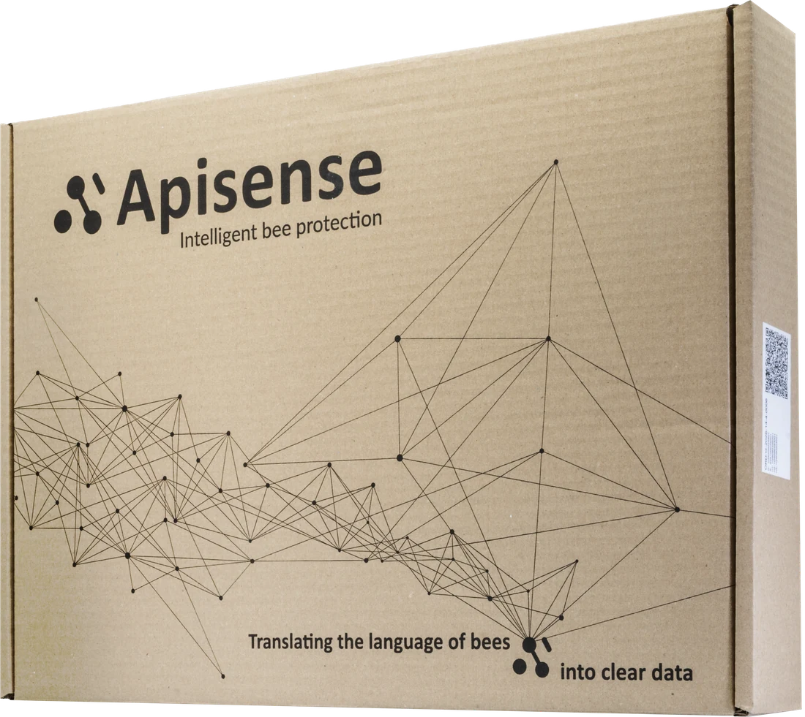
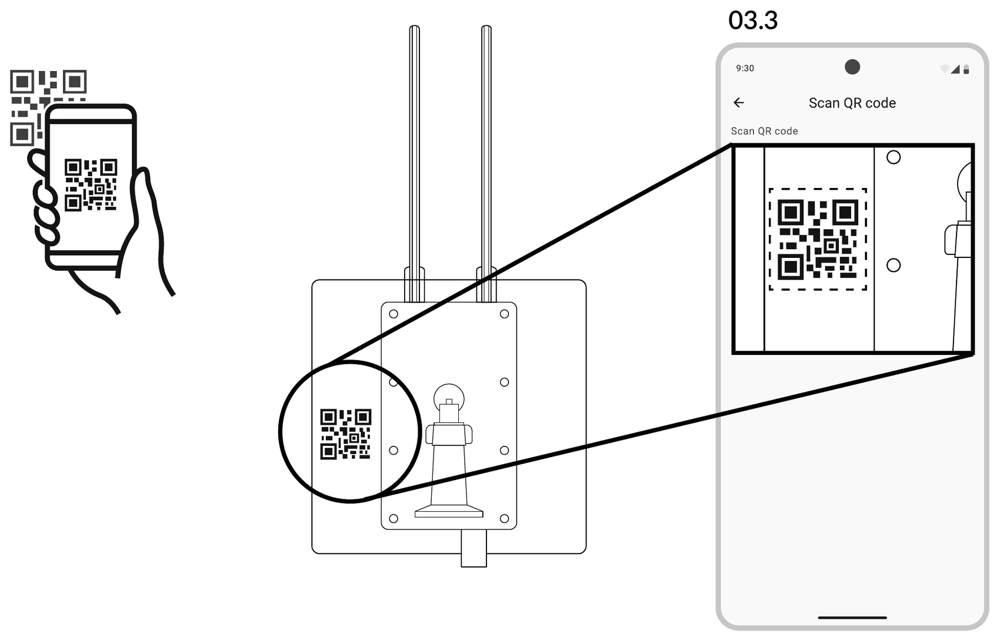
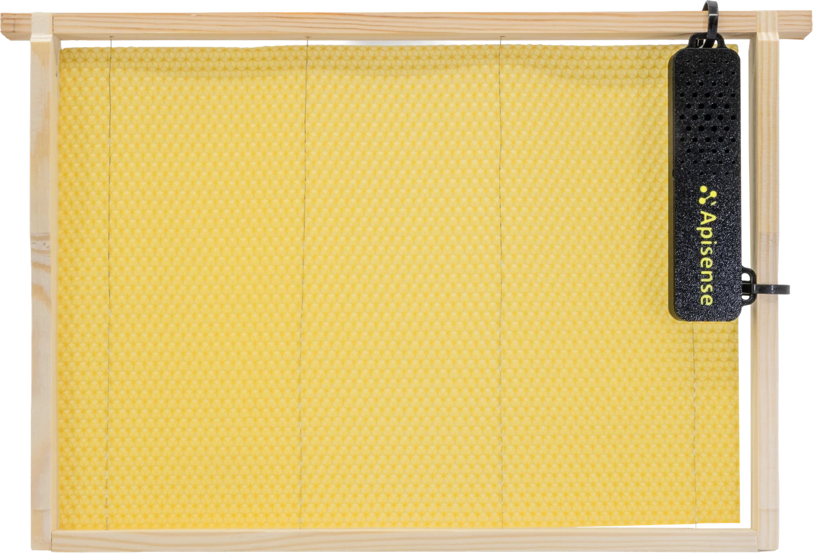

ZestawThe kitDas SetLe kitEl kitIl kitSettetSetSadaSadaA készletKompletKitulPakettiDe setPaketetSættetΤο κιτ
Co znajdziesz w pudełkuWhat's in the boxWas im Karton stecktCe que contient le cartonQué hay en la cajaCosa c'è nella scatolaDette ligger i eskenKutuda neler varCo najdete v krabiciČo nájdeš v škatuliMi van a dobozbanŠto je u kutijiCe găsiți în cutieMitä laatikossa onWat zit er in de doosDet här finns i kartongenDet finder du i kassenΤι υπάρχει στο κουτί
Jeden Hub obsługuje całą pasiekę. Scale trafia pod pierwszy ul, a każdy z trzech uli dostaje własny VitalSensor i ColonyLink. A single Hub serves the whole apiary. The Scale goes under the first hive, and each of the three hives gets its own VitalSensor and ColonyLink.Ein Hub versorgt den ganzen Bienenstand. Die Scale kommt unter den ersten Bienenstock, und jeder der drei Stöcke bekommt einen eigenen VitalSensor und ColonyLink.Un seul Hub couvre tout le rucher. La Scale se place sous la première ruche, et chacune des trois ruches reçoit son propre VitalSensor et son ColonyLink.Un solo Hub cubre todo el colmenar. El Scale va debajo de la primera colmena y cada una de las tres colmenas recibe su propio VitalSensor y su ColonyLink.Un solo Hub copre l'intero apiario. La Scale va sotto la prima arnia e ognuna delle tre arnie riceve il proprio VitalSensor e il proprio ColonyLink.Én Hub dekker hele bigården. Scale plasseres under den første bikuben, og hver av de tre bikubene får sin egen VitalSensor og ColonyLink.Tek bir Hub tüm arılığa hizmet eder. Scale ilk kovanın altına girer; üç kovanın her biri kendi VitalSensor ve ColonyLink cihazını alır.Jeden Hub obsluhuje celou včelnici. Scale se umísťuje pod první úl a každý ze tří úlů dostane vlastní VitalSensor a ColonyLink.Jeden Hub obslúži celú včelnicu. Scale ide pod prvý úľ a každý z troch úľov dostane vlastný VitalSensor a ColonyLink.Egyetlen Hub kiszolgálja az egész méhest. A Scale az első kaptár alá kerül, a három kaptár mindegyikéhez pedig saját VitalSensor és ColonyLink tartozik.Jedan Hub pokriva cijeli pčelinjak. Scale ide ispod prve košnice, a svaka od tri košnice dobiva vlastiti VitalSensor i ColonyLink.Un singur Hub deservește întreaga stupină. Scale se așază sub primul stup, iar fiecare dintre cei trei stupi primește propriul VitalSensor și propriul ColonyLink.Yksi Hub riittää koko mehiläistarhalle. Scale tulee ensimmäisen pesän alle, ja jokainen kolmesta pesästä saa oman VitalSensorin ja ColonyLinkin.Eén Hub bedient de hele bijenstand. De Scale komt onder de eerste kast, en elk van de drie kasten krijgt een eigen VitalSensor en ColonyLink.En enda Hub täcker hela bigården. Scale placeras under den första bikupan, och var och en av de tre bikuporna får en egen VitalSensor och ColonyLink.Én Hub dækker hele bigården. Scale placeres under det første bistade, og hvert af de tre bistader får sin egen VitalSensor og sit eget ColonyLink.Ένα μόνο Hub εξυπηρετεί ολόκληρο το μελισσοκομείο. Το Scale μπαίνει κάτω από την πρώτη κυψέλη και καθεμία από τις τρεις κυψέλες αποκτά το δικό της VitalSensor και ColonyLink.

1 × Hub

1 × Scale

3 × VitalSensor

3 × ColonyLink

Krok 01Step 01Schritt 01Étape 01Paso 01Passo 01Trinn 01Adım 01Krok 01Krok 0101. lépésKorak 01Pasul 01Vaihe 01Stap 01Steg 01Trin 01Βήμα 01
Pobierz aplikacjęDownload the appApp herunterladenTéléchargez l'applicationDescarga la aplicaciónScarica l'appLast ned appenUygulamayı indirinStáhněte si aplikaciStiahni aplikáciuTöltsd le az alkalmazástPreuzmite aplikacijuDescărcați aplicațiaLataa sovellusDownload de appLadda ner appenHent appenΚατεβάστε την εφαρμογή
Cały zestaw konfigurujesz z telefonu. Zeskanuj kod QR aparatem albo wyszukaj Apisense Pro AI w App Store lub Google Play. The whole kit is configured from your phone. Scan the QR code with your camera or search for Apisense Pro AI in the App Store or Google Play.Das gesamte Set richtest du über das Handy ein. Scanne den QR-Code mit der Kamera oder suche Apisense Pro AI im App Store oder bei Google Play.Vous configurez tout le kit depuis votre téléphone. Scannez le QR code avec l'appareil photo ou cherchez Apisense Pro AI dans l'App Store ou sur Google Play.Todo el kit se configura desde el teléfono. Escanea el código QR con la cámara o busca Apisense Pro AI en la App Store o en Google Play.L'intero kit si configura dal telefono. Scansiona il codice QR con la fotocamera oppure cerca Apisense Pro AI nell'App Store o su Google Play.Hele settet konfigurerer du fra telefonen. Skann QR-koden med kameraet, eller søk etter Apisense Pro AI i App Store eller Google Play.Tüm seti telefonunuzdan yapılandırırsınız. QR kodunu kameranızla tarayın ya da App Store veya Google Play'de Apisense Pro AI uygulamasını arayın.Celou sadu nastavíte z telefonu. Naskenujte QR kód fotoaparátem nebo vyhledejte Apisense Pro AI v App Store nebo na Google Play.Celú sadu nastavíš z telefónu. Naskenuj QR kód fotoaparátom alebo vyhľadaj Apisense Pro AI v App Store alebo Google Play.Az egész készletet a telefonodról állítod be. Olvasd be a QR-kódot a kamerával, vagy keress rá az Apisense Pro AI alkalmazásra az App Store-ban vagy a Google Play-en.Cijeli komplet konfigurirate s telefona. Skenirajte QR kod kamerom ili potražite Apisense Pro AI u App Storeu ili na Google Playu.Tot kitul se configurează de pe telefon. Scanați codul QR cu camera sau căutați Apisense Pro AI în App Store sau pe Google Play.Määrität koko paketin puhelimella. Skannaa QR-koodi kameralla tai hae Apisense Pro AI App Storesta tai Google Playsta.De hele set stel je in vanaf je telefoon. Scan de QR-code met je camera of zoek op Apisense Pro AI in de App Store of Google Play.Hela paketet ställer du in från telefonen. Skanna QR-koden med kameran eller sök efter Apisense Pro AI i App Store eller Google Play.Hele sættet konfigurerer du fra telefonen. Scan QR-koden med kameraet, eller søg efter Apisense Pro AI i App Store eller Google Play.Ολόκληρο το κιτ ρυθμίζεται από το κινητό σας. Σαρώστε τον κωδικό QR με την κάμερα ή αναζητήστε Apisense Pro AI στο App Store ή στο Google Play.
- iOSGórny kod QR — App StoreTop QR code — App StoreOberer QR-Code — App StoreQR code du haut — App StoreCódigo QR superior — App StoreCodice QR in alto — App StoreØverste QR-kode — App StoreÜstteki QR kodu — App StoreHorní QR kód — App StoreHorný QR kód — App StoreFelső QR-kód — App StoreGornji QR kod — App StoreCodul QR de sus — App StoreYlempi QR-koodi — App StoreBovenste QR-code — App StoreÖversta QR-koden — App StoreØverste QR-kode — App StoreΕπάνω κωδικός QR — App Store
- AndroidDolny kod QR — Google PlayBottom QR code — Google PlayUnterer QR-Code — Google PlayQR code du bas — Google PlayCódigo QR inferior — Google PlayCodice QR in basso — Google PlayNederste QR-kode — Google PlayAlttaki QR kodu — Google PlayDolní QR kód — Google PlayDolný QR kód — Google PlayAlsó QR-kód — Google PlayDonji QR kod — Google PlayCodul QR de jos — Google PlayAlempi QR-koodi — Google PlayOnderste QR-code — Google PlayNedersta QR-koden — Google PlayNederste QR-kode — Google PlayΚάτω κωδικός QR — Google Play
- wwwMożesz też pracować w przeglądarce: app.apisense.aiYou can also work in a browser: app.apisense.aiDu kannst auch im Browser arbeiten: app.apisense.aiVous pouvez aussi travailler dans le navigateur : app.apisense.aiTambién puedes trabajar en el navegador: app.apisense.aiPuoi lavorare anche dal browser: app.apisense.aiDu kan også jobbe i nettleseren: app.apisense.aiTarayıcıdan da çalışabilirsiniz: app.apisense.aiPracovat můžete i v prohlížeči: app.apisense.aiPracovať môžeš aj v prehliadači: app.apisense.aiBöngészőből is dolgozhatsz: app.apisense.aiMožete raditi i u pregledniku: app.apisense.aiPuteți lucra și în browser: app.apisense.aiVoit työskennellä myös selaimessa: app.apisense.aiJe kunt ook in de browser werken: app.apisense.aiDu kan också arbeta i webbläsaren: app.apisense.aiDu kan også arbejde i browseren: app.apisense.aiΜπορείτε επίσης να εργαστείτε από περιηγητή: app.apisense.ai

Krok 02Step 02Schritt 02Étape 02Paso 02Passo 02Trinn 02Adım 02Krok 02Krok 0202. lépésKorak 02Pasul 02Vaihe 02Stap 02Steg 02Trin 02Βήμα 02
Stwórz kontoCreate an accountKonto erstellenCréez un compteCrea una cuentaCrea un accountOpprett kontoHesap oluşturunVytvořte si účetVytvor si kontoHozz létre fiókotIzradite računCreați un contLuo tiliAccount aanmakenSkapa ett kontoOpret kontoΔημιουργήστε λογαριασμό
Podaj nazwę użytkownika, adres e-mail i numer telefonu, a następnie naciśnij Next. Możesz też zarejestrować się kontem Google lub Apple. Enter a username, e-mail address and mobile phone, then tap Next. You can also sign up with your Google or Apple account.Gib Benutzernamen, E-Mail-Adresse und Telefonnummer ein und tippe auf Next. Du kannst dich auch mit deinem Google- oder Apple-Konto registrieren.Saisissez un nom d'utilisateur, une adresse e-mail et un numéro de téléphone, puis appuyez sur Next. Vous pouvez aussi vous inscrire avec un compte Google ou Apple.Introduce un nombre de usuario, una dirección de correo y un número de teléfono, y pulsa Next. También puedes registrarte con tu cuenta de Google o de Apple.Inserisci nome utente, indirizzo e-mail e numero di telefono, poi tocca Next. Puoi anche registrarti con un account Google o Apple.Skriv inn brukernavn, e-postadresse og mobilnummer, og trykk deretter Next. Du kan også registrere deg med Google- eller Apple-kontoen din.Kullanıcı adı, e-posta adresi ve cep telefonu numarası girin, ardından Next düğmesine dokunun. Google veya Apple hesabınızla da kaydolabilirsiniz.Zadejte uživatelské jméno, e-mailovou adresu a číslo mobilního telefonu a pak klepněte na Next. Zaregistrovat se můžete také účtem Google nebo Apple.Zadaj používateľské meno, e-mailovú adresu a telefónne číslo a potom stlač Next. Zaregistrovať sa môžeš aj kontom Google alebo Apple.Add meg a felhasználóneved, az e-mail-címed és a mobilszámod, majd koppints a Next gombra. Google- vagy Apple-fiókkal is regisztrálhatsz.Unesite korisničko ime, adresu e-pošte i broj mobitela, a zatim dodirnite Next. Možete se registrirati i putem Google ili Apple računa.Introduceți un nume de utilizator, o adresă de e-mail și un număr de telefon, apoi apăsați Next. Vă puteți înregistra și cu contul Google sau Apple.Anna käyttäjätunnus, sähköpostiosoite ja matkapuhelinnumero ja napauta sitten Next. Voit myös rekisteröityä Google- tai Apple-tilillä.Vul een gebruikersnaam, e-mailadres en mobiel nummer in en tik op Next. Je kunt je ook aanmelden met je Google- of Apple-account.Ange användarnamn, e-postadress och mobilnummer, och tryck sedan på Next. Du kan också registrera dig med ditt Google- eller Apple-konto.Indtast brugernavn, e-mailadresse og mobilnummer, og tryk derefter på Next. Du kan også tilmelde dig med din Google- eller Apple-konto.Δώστε όνομα χρήστη, διεύθυνση e-mail και αριθμό κινητού και μετά πατήστε Next. Μπορείτε επίσης να εγγραφείτε με τον λογαριασμό σας Google ή Apple.
- UsernameNazwa widoczna w aplikacjiName shown inside the appIn der App sichtbarer NameNom affiché dans l'applicationNombre visible en la aplicaciónNome visibile nell'appNavnet som vises i appenUygulamada görünen adJméno viditelné v aplikaciMeno viditeľné v aplikáciiAz alkalmazásban megjelenő névIme koje se prikazuje u aplikacijiNumele afișat în aplicațieSovelluksessa näkyvä nimiNaam die je in de app zietNamnet som visas i appenNavnet, der vises i appenΤο όνομα που εμφανίζεται στην εφαρμογή
- EmailSłuży do logowania i powiadomieńUsed for login and notificationsFür Anmeldung und BenachrichtigungenSert à la connexion et aux notificationsPara el inicio de sesión y las notificacionesServe per l'accesso e le notificheBrukes til innlogging og varslerGiriş ve bildirimler için kullanılırSlouží k přihlášení a oznámenímSlúži na prihlásenie a upozorneniaBelépéshez és értesítésekhezSluži za prijavu i obavijestiFolosit pentru autentificare și notificăriKäytetään kirjautumiseen ja ilmoituksiinVoor inloggen en meldingenAnvänds för inloggning och aviseringarBruges til login og notifikationerΧρησιμεύει για τη σύνδεση και τις ειδοποιήσεις
- PhoneNumer kontaktowy do kontaContact number for the accountKontaktnummer für das KontoNuméro de contact du compteNúmero de contacto de la cuentaNumero di contatto dell'accountKontaktnummer for kontoenHesabın iletişim numarasıKontaktní číslo k účtuKontaktné číslo ku kontuA fiók kapcsolattartási számaKontakt broj računaNumărul de contact al contuluiTilin yhteysnumeroContactnummer voor het accountKontaktnummer till kontotKontaktnummer til kontoenΑριθμός επικοινωνίας για τον λογαριασμό

Krok 03 · 03.1 – 03.2Step 03 · 03.1 – 03.2Schritt 03 · 03.1 – 03.2Étape 03 · 03.1 – 03.2Paso 03 · 03.1 – 03.2Passo 03 · 03.1 – 03.2Trinn 03 · 03.1 – 03.2Adım 03 · 03.1 – 03.2Krok 03 · 03.1 – 03.2Krok 03 · 03.1 – 03.203. lépés · 03.1 – 03.2Korak 03 · 03.1 – 03.2Pasul 03 · 03.1 – 03.2Vaihe 03 · 03.1 – 03.2Stap 03 · 03.1 – 03.2Steg 03 · 03.1 – 03.2Trin 03 · 03.1 – 03.2Βήμα 03 · 03.1 – 03.2
Dodaj pasiekęAdd apiaryBienenstand anlegenAjoutez un rucherAñade un colmenarAggiungi un apiarioLegg til bigårdArılık ekleyinPřidejte včelniciPridaj včelnicuAdj hozzá méhestDodajte pčelinjakAdăugați o stupinăLisää mehiläistarhaBijenstand toevoegenLägg till bigårdTilføj bigårdΠροσθέστε μελισσοκομείο
Pasieka to miejsce, w którym stoją ule i jeden Hub. Zaczynasz od nadania jej nazwy. An apiary is the place where your hives and one Hub live. Start by giving it a name.Ein Bienenstand ist der Ort, an dem deine Stöcke und ein Hub stehen. Du beginnst damit, ihm einen Namen zu geben.Un rucher est l'endroit où se trouvent vos ruches et un Hub. Commencez par lui donner un nom.Un colmenar es el lugar donde están tus colmenas y un Hub. Empieza por darle un nombre.L'apiario è il luogo in cui si trovano le tue arnie e un Hub. Inizia assegnandogli un nome.En bigård er stedet der bikubene dine og én Hub står. Start med å gi den et navn.Arılık, kovanlarınızın ve bir Hub'ın bulunduğu yerdir. İşe ona bir ad vererek başlayın.Včelnice je místo, kde stojí vaše úly a jeden Hub. Začněte tím, že jí dáte název.Včelnica je miesto, kde stoja tvoje úle a jeden Hub. Začni tým, že jej dáš názov.A méhes az a hely, ahol a kaptáraid és egy Hub állnak. Kezdd azzal, hogy nevet adsz neki.Pčelinjak je mjesto na kojem stoje vaše košnice i jedan Hub. Počnite tako da mu date ime.Stupina este locul în care se află stupii și un Hub. Începeți prin a-i da un nume.Mehiläistarha on paikka, jossa pesäsi ja yksi Hub sijaitsevat. Aloita antamalla sille nimi.Een bijenstand is de plek waar je kasten en één Hub staan. Je begint met het geven van een naam.En bigård är platsen där dina bikupor och en Hub står. Börja med att ge den ett namn.En bigård er stedet, hvor dine bistader og én Hub står. Start med at give den et navn.Το μελισσοκομείο είναι ο χώρος όπου βρίσκονται οι κυψέλες σας και ένα Hub. Ξεκινήστε δίνοντάς του ένα όνομα.
- 03.1Na ekranie powitalnym naciśnij Add apiary.On the welcome screen tap Add apiary.Tippe auf dem Startbildschirm auf Add apiary.Sur l'écran d'accueil, appuyez sur Add apiary.En la pantalla de bienvenida, pulsa Add apiary.Nella schermata di benvenuto tocca Add apiary.Trykk på Add apiary på velkomstskjermen.Karşılama ekranında Add apiary öğesine dokunun.Na úvodní obrazovce klepněte na Add apiary.Na úvodnej obrazovke stlač Add apiary.Az üdvözlőképernyőn koppints az Add apiary gombra.Na zaslonu dobrodošlice dodirnite Add apiary.Pe ecranul de întâmpinare apăsați Add apiary.Napauta tervetuloanäytössä Add apiary.Tik op Add apiary in het welkomstscherm.Tryck på Add apiary på välkomstskärmen.Tryk på Add apiary på velkomstskærmen.Στην οθόνη καλωσορίσματος πατήστε Add apiary.
- 03.2Wpisz nazwę pasieki i jej skrót (maks. 3 znaki), a potem dotknij ikony skanera przy polu Hub.Enter the apiary name and its abbreviation (max. 3 characters), then tap the scanner icon next to the Hub field.Gib den Namen des Bienenstands und sein Kürzel (max. 3 Zeichen) ein und tippe dann auf das Scanner-Symbol neben dem Feld Hub.Saisissez le nom du rucher et son abréviation (3 caractères max.), puis appuyez sur l'icône du scanner à côté du champ Hub.Introduce el nombre del colmenar y su abreviatura (máx. 3 caracteres) y pulsa el icono del escáner junto al campo Hub.Inserisci il nome dell'apiario e la sua sigla (max. 3 caratteri), poi tocca l'icona dello scanner accanto al campo Hub.Skriv inn navnet på bigården og forkortelsen (maks. 3 tegn), og trykk deretter på skannerikonet ved feltet Hub.Arılık adını ve kısaltmasını (en fazla 3 karakter) girin, ardından Hub alanının yanındaki tarayıcı simgesine dokunun.Zadejte název včelnice a její zkratku (max. 3 znaky) a pak klepněte na ikonu skeneru u pole Hub.Zadaj názov včelnice a jej skratku (max. 3 znaky) a potom ťukni na ikonu skenera pri poli Hub.Írd be a méhes nevét és a rövidítését (max. 3 karakter), majd koppints a Hub mező melletti szkennerikonra.Unesite naziv pčelinjaka i njegovu kraticu (najviše 3 znaka), a zatim dodirnite ikonu skenera uz polje Hub.Introduceți numele stupinei și abrevierea ei (max. 3 caractere), apoi apăsați pictograma scanerului de lângă câmpul Hub.Kirjoita tarhan nimi ja sen lyhenne (enintään 3 merkkiä) ja napauta sitten Hub-kentän vieressä olevaa skannerikuvaketta.Vul de naam van de bijenstand en de afkorting (max. 3 tekens) in en tik daarna op het scanpictogram naast het veld Hub.Ange bigårdens namn och dess förkortning (max 3 tecken) och tryck sedan på skannerikonen vid fältet Hub.Indtast bigårdens navn og forkortelse (maks. 3 tegn), og tryk derefter på scannerikonet ved feltet Hub.Πληκτρολογήστε το όνομα του μελισσοκομείου και τη συντομογραφία του (έως 3 χαρακτήρες) και μετά πατήστε το εικονίδιο του σαρωτή δίπλα στο πεδίο Hub.

Krok 03 · 03.3Step 03 · 03.3Schritt 03 · 03.3Étape 03 · 03.3Paso 03 · 03.3Passo 03 · 03.3Trinn 03 · 03.3Adım 03 · 03.3Krok 03 · 03.3Krok 03 · 03.303. lépés · 03.3Korak 03 · 03.3Pasul 03 · 03.3Vaihe 03 · 03.3Stap 03 · 03.3Steg 03 · 03.3Trin 03 · 03.3Βήμα 03 · 03.3
Zeskanuj kod QR HubaScan the Hub QR codeQR-Code des Hubs scannenScannez le QR code du HubEscanea el código QR del HubScansiona il codice QR dell'HubSkann QR-koden til HubHub'ın QR kodunu tarayınNaskenujte QR kód HubuNaskenuj QR kód HubuOlvasd be a Hub QR-kódjátSkenirajte QR kod HubaScanați codul QR de pe HubSkannaa Hubin QR-koodiScan de QR-code van de HubSkanna QR-koden på HubScan QR-koden på HubΣαρώστε τον κωδικό QR του Hub
Naklejka z kodem QR znajduje się na obudowie Huba. Ustaw ją w ramce skanera — aplikacja odczyta kod sama i wypełni pola Hub oraz Verification Code. The QR sticker sits on the Hub housing. Line it up inside the scanner frame — the app reads it and fills in the Hub and Verification Code fields for you.Der QR-Aufkleber sitzt auf dem Gehäuse des Hubs. Richte ihn im Scannerrahmen aus — die App liest den Code selbst und füllt die Felder Hub und Verification Code aus.L'autocollant QR se trouve sur le boîtier du Hub. Placez-le dans le cadre du scanner : l'application lit le code et remplit les champs Hub et Verification Code.La pegatina con el código QR está en la carcasa del Hub. Encuádrala en el marco del escáner: la aplicación lee el código y rellena por ti los campos Hub y Verification Code.L'adesivo con il codice QR si trova sulla scocca dell'Hub. Inquadralo nel riquadro dello scanner: l'app lo legge da sola e compila i campi Hub e Verification Code.Klistremerket med QR-koden sitter på kabinettet til Hub. Legg det midt i skannerrammen — appen leser koden selv og fyller ut feltene Hub og Verification Code for deg.QR etiketi Hub'ın gövdesindedir. Etiketi tarayıcı çerçevesine hizalayın — uygulama kodu kendisi okur ve Hub ile Verification Code alanlarını sizin için doldurur.Samolepka s QR kódem je na pouzdru Hubu. Umístěte ji do rámečku skeneru — aplikace ji přečte sama a vyplní za vás pole Hub a Verification Code.Nálepka s QR kódom je na kryte Hubu. Zameraj ju do rámčeka skenera — aplikácia kód prečíta sama a vyplní za teba polia Hub a Verification Code.A QR-kódos matrica a Hub burkolatán található. Igazítsd a szkenner keretébe — az alkalmazás magától beolvassa, és helyetted tölti ki a Hub és a Verification Code mezőt.Naljepnica s QR kodom nalazi se na kućištu Huba. Poravnajte je u okviru skenera — aplikacija je sama očita i umjesto vas ispuni polja Hub i Verification Code.Autocolantul cu codul QR se află pe carcasa Hub-ului. Încadrați-l în chenarul scanerului — aplicația îl citește singură și completează în locul dumneavoastră câmpurile Hub și Verification Code.QR-tarra on Hubin kotelossa. Aseta se skannerin kehyksen sisään — sovellus lukee koodin ja täyttää Hub- ja Verification Code -kentät puolestasi.De QR-sticker zit op de behuizing van de Hub. Houd hem binnen het kader van de scanner — de app leest de code zelf en vult de velden Hub en Verification Code voor je in.QR-dekalen sitter på höljet till Hub. Rikta in den i skannerramen — appen läser koden själv och fyller i fälten Hub och Verification Code åt dig.Klistermærket med QR-koden sidder på Hub-kabinettet. Placér det midt i scannerrammen — appen læser koden og udfylder felterne Hub og Verification Code for dig.Το αυτοκόλλητο με τον κωδικό QR βρίσκεται στο περίβλημα του Hub. Ευθυγραμμίστε το μέσα στο πλαίσιο του σαρωτή — η εφαρμογή διαβάζει τον κωδικό μόνη της και συμπληρώνει τα πεδία Hub και Verification Code.
Wskazówka: jeśli kod się nie skanuje, przetrzyj go i zapewnij równomierne światło — bez odblasku. Tip: if the code will not scan, wipe it clean and use even light — avoid glare.Tipp: Lässt sich der Code nicht scannen, wische ihn sauber und sorge für gleichmäßiges Licht — ohne Spiegelung.Astuce : si le code ne se scanne pas, essuyez-le et assurez un éclairage uniforme, sans reflet.Consejo: si el código no se escanea, límpialo y busca una luz uniforme, sin reflejos.Suggerimento: se il codice non viene letto, puliscilo e assicura una luce uniforme, senza riflessi.Tips: hvis koden ikke lar seg skanne, tørk den ren og sørg for jevnt lys — unngå gjenskinn.İpucu: kod okunmuyorsa etiketi silin ve eşit bir aydınlatma sağlayın — parlama olmasın.Tip: pokud se kód nedaří naskenovat, otřete ho a zajistěte rovnoměrné světlo — bez odlesků.Tip: ak sa kód nedá naskenovať, utri ho a zabezpeč rovnomerné svetlo — bez odleskov.Tipp: ha a kód nem olvasható be, töröld tisztára, és világítsd meg egyenletesen — csillanás nélkül.Savjet: ako se kod ne skenira, obrišite ga i osigurajte ravnomjerno svjetlo — bez odsjaja.Sfat: dacă nu se scanează codul, ștergeți-l și asigurați o lumină uniformă — fără reflexii.Vinkki: jos koodi ei skannaudu, pyyhi se puhtaaksi ja huolehdi tasaisesta valosta — vältä heijastuksia.Tip: lukt het scannen niet, veeg de code dan schoon en zorg voor gelijkmatig licht — zonder weerspiegeling.Tips: om koden inte går att skanna, torka av den och se till att ljuset är jämnt — utan reflexer.Tip: hvis koden ikke kan scannes, så tør den af, og sørg for jævnt lys — undgå genskin.Συμβουλή: αν ο κωδικός δεν σαρώνεται, σκουπίστε τον και φροντίστε για ομοιόμορφο φωτισμό — χωρίς αντανακλάσεις.


Krok 03 · 03.4 – 03.6Step 03 · 03.4 – 03.6Schritt 03 · 03.4 – 03.6Étape 03 · 03.4 – 03.6Paso 03 · 03.4 – 03.6Passo 03 · 03.4 – 03.6Trinn 03 · 03.4 – 03.6Adım 03 · 03.4 – 03.6Krok 03 · 03.4 – 03.6Krok 03 · 03.4 – 03.603. lépés · 03.4 – 03.6Korak 03 · 03.4 – 03.6Pasul 03 · 03.4 – 03.6Vaihe 03 · 03.4 – 03.6Stap 03 · 03.4 – 03.6Steg 03 · 03.4 – 03.6Trin 03 · 03.4 – 03.6Βήμα 03 · 03.4 – 03.6
Pasieka jest gotowaYour apiary is readyDer Bienenstand stehtLe rucher est prêtEl colmenar está listoL'apiario è prontoBigården er klarArılığınız hazırVčelnice je připravenáVčelnica je pripravenáA méhesed készen állPčelinjak je spremanStupina este gataMehiläistarha on valmisDe bijenstand is klaarBigården är klarDin bigård er klarΤο μελισσοκομείο είναι έτοιμο
Po zeskanowaniu kodu aplikacja uzupełnia dane Huba za Ciebie — nic nie przepisujesz ręcznie. After the scan the app fills in the Hub details for you — nothing has to be typed by hand.Nach dem Scan trägt die App die Hub-Daten für dich ein — nichts muss abgetippt werden.Après le scan, l'application renseigne les données du Hub à votre place : rien à recopier.Tras el escaneo, la aplicación rellena por ti los datos del Hub: no hay que escribir nada a mano.Dopo la scansione l'app compila da sola i dati dell'Hub: non devi trascrivere nulla a mano.Etter skanningen fyller appen ut opplysningene om Hub for deg — ingenting må skrives inn for hånd.Taramadan sonra uygulama Hub bilgilerini sizin için doldurur — elle hiçbir şey yazmanız gerekmez.Po naskenování kódu vyplní aplikace údaje Hubu za vás — nic nemusíte přepisovat ručně.Po naskenovaní kódu aplikácia doplní údaje Hubu za teba — nič neprepisuješ ručne.A beolvasás után az alkalmazás helyetted tölti ki a Hub adatait — semmit nem kell kézzel begépelned.Nakon skeniranja aplikacija umjesto vas ispunjava podatke Huba — ništa ne morate upisivati ručno.După scanare, aplicația completează singură datele Hub-ului — nu trebuie să tastați nimic.Skannauksen jälkeen sovellus täyttää Hubin tiedot puolestasi — mitään ei tarvitse kirjoittaa käsin.Na het scannen vult de app de gegevens van de Hub voor je in — je hoeft niets over te typen.Efter skanningen fyller appen i uppgifterna om Hub åt dig — inget behöver skrivas in för hand.Efter scanningen udfylder appen oplysningerne om Hub for dig — intet skal indtastes manuelt.Μετά τη σάρωση η εφαρμογή συμπληρώνει τα στοιχεία του Hub για εσάς — δεν χρειάζεται να πληκτρολογήσετε τίποτα.
- 03.4Skaner odczytuje kod QR z Huba.The scanner reads the QR code from the Hub.Der Scanner liest den QR-Code vom Hub.Le scanner lit le QR code du Hub.El escáner lee el código QR del Hub.Lo scanner legge il codice QR dall'Hub.Skanneren leser QR-koden fra Hub.Tarayıcı, Hub üzerindeki QR kodunu okur.Skener načte QR kód z Hubu.Skener načíta QR kód z Hubu.A szkenner beolvassa a Hub QR-kódját.Skener očitava QR kod s Huba.Scanerul citește codul QR de pe Hub.Skanneri lukee Hubin QR-koodin.De scanner leest de QR-code van de Hub.Skannern läser QR-koden på Hub.Scanneren læser QR-koden fra Hub.Ο σαρωτής διαβάζει τον κωδικό QR από το Hub.
- 03.5Pola Hub i Verification Code wypełniają się automatycznie — zatwierdź formularz.The Hub and Verification Code fields fill in automatically — confirm the form.Die Felder Hub und Verification Code füllen sich automatisch — bestätige das Formular.Les champs Hub et Verification Code se remplissent automatiquement : validez le formulaire.Los campos Hub y Verification Code se rellenan automáticamente: confirma el formulario.I campi Hub e Verification Code si compilano automaticamente: conferma il modulo.Feltene Hub og Verification Code fylles ut automatisk — bekreft skjemaet.Hub ve Verification Code alanları otomatik olarak dolar — formu onaylayın.Pole Hub a Verification Code se vyplní automaticky — potvrďte formulář.Polia Hub a Verification Code sa vyplnia automaticky — potvrď formulár.A Hub és a Verification Code mező automatikusan kitöltődik — hagyd jóvá az űrlapot.Polja Hub i Verification Code ispunjavaju se automatski — potvrdite obrazac.Câmpurile Hub și Verification Code se completează automat — confirmați formularul.Hub- ja Verification Code -kentät täyttyvät automaattisesti — vahvista lomake.De velden Hub en Verification Code worden automatisch ingevuld — bevestig het formulier.Fälten Hub och Verification Code fylls i automatiskt — bekräfta formuläret.Felterne Hub og Verification Code udfyldes automatisk — bekræft formularen.Τα πεδία Hub και Verification Code συμπληρώνονται αυτόματα — επιβεβαιώστε τη φόρμα.
- 03.6Pasieka pojawia się na ekranie głównym razem z pogodą.The apiary appears on the home screen along with the weather.Der Bienenstand erscheint samt Wetter auf dem Startbildschirm.Le rucher apparaît sur l'écran d'accueil, avec la météo.El colmenar aparece en la pantalla de inicio junto con el tiempo.L'apiario compare nella schermata principale insieme al meteo.Bigården dukker opp på startskjermen sammen med været.Arılık, hava durumuyla birlikte ana ekranda görünür.Včelnice se objeví na hlavní obrazovce spolu s počasím.Včelnica sa objaví na domovskej obrazovke spolu s počasím.A méhes megjelenik a kezdőképernyőn, az időjárással együtt.Pčelinjak se pojavljuje na početnom zaslonu zajedno s vremenskom prognozom.Stupina apare pe ecranul principal, împreună cu vremea.Mehiläistarha ilmestyy aloitusnäyttöön yhdessä sään kanssa.De bijenstand verschijnt samen met het weer op het startscherm.Bigården dyker upp på startskärmen tillsammans med vädret.Bigården vises på startskærmen sammen med vejret.Το μελισσοκομείο εμφανίζεται στην αρχική οθόνη μαζί με τον καιρό.

Krok 04 · 04.1 – 04.3Step 04 · 04.1 – 04.3Schritt 04 · 04.1 – 04.3Étape 04 · 04.1 – 04.3Paso 04 · 04.1 – 04.3Passo 04 · 04.1 – 04.3Trinn 04 · 04.1 – 04.3Adım 04 · 04.1 – 04.3Krok 04 · 04.1 – 04.3Krok 04 · 04.1 – 04.304. lépés · 04.1 – 04.3Korak 04 · 04.1 – 04.3Pasul 04 · 04.1 – 04.3Vaihe 04 · 04.1 – 04.3Stap 04 · 04.1 – 04.3Steg 04 · 04.1 – 04.3Trin 04 · 04.1 – 04.3Βήμα 04 · 04.1 – 04.3
Dodaj ul: ColonyLink, VitalSensor i ScaleAdd hive: ColonyLink, VitalSensor & ScaleStock anlegen: ColonyLink, VitalSensor und ScaleAjoutez une ruche : ColonyLink, VitalSensor et ScaleAñade una colmena: ColonyLink, VitalSensor y ScaleAggiungi un'arnia: ColonyLink, VitalSensor e ScaleLegg til bikube: ColonyLink, VitalSensor og ScaleKovan ekleyin: ColonyLink, VitalSensor ve ScalePřidejte úl: ColonyLink, VitalSensor a ScalePridaj úľ: ColonyLink, VitalSensor a ScaleAdj hozzá kaptárt: ColonyLink, VitalSensor és ScaleDodajte košnicu: ColonyLink, VitalSensor i ScaleAdăugați un stup: ColonyLink, VitalSensor și ScaleLisää pesä: ColonyLink, VitalSensor ja ScaleKast toevoegen: ColonyLink, VitalSensor en ScaleLägg till bikupa: ColonyLink, VitalSensor och ScaleTilføj bistade: ColonyLink, VitalSensor og ScaleΠροσθέστε κυψέλη: ColonyLink, VitalSensor και Scale
Pierwszy ul dostaje komplet. Wszystkie trzy urządzenia przypisujesz w jednym formularzu, skanując kolejno ich kody QR. The first hive gets the full set. You link all three devices in a single form, scanning their QR codes one after another.Der erste Stock bekommt das komplette Set. Alle drei Geräte weist du in einem Formular zu, indem du ihre QR-Codes nacheinander scannst.La première ruche reçoit l'ensemble complet. Vous associez les trois appareils dans un seul formulaire, en scannant leurs QR codes l'un après l'autre.La primera colmena recibe el equipo completo. Asignas los tres dispositivos en un solo formulario, escaneando sus códigos QR uno tras otro.La prima arnia riceve il set completo. Colleghi tutti e tre i dispositivi in un unico modulo, scansionando i loro codici QR uno dopo l'altro.Den første bikuben får hele settet. Du tilordner alle tre enhetene i ett skjema ved å skanne QR-kodene etter tur.İlk kovan tam seti alır. Üç cihazın hepsini tek bir formda, QR kodlarını sırayla tarayarak eşleştirirsiniz.První úl dostane kompletní sadu. Všechna tři zařízení propojíte v jediném formuláři, když postupně naskenujete jejich QR kódy.Prvý úľ dostane kompletnú sadu. Všetky tri zariadenia priradíš v jednom formulári tak, že postupne naskenuješ ich QR kódy.Az első kaptár kapja a teljes készletet. Mindhárom eszközt egyetlen űrlapon rendeled hozzá, egymás után beolvasva a QR-kódjukat.Prva košnica dobiva cijeli komplet. Sva tri uređaja povezujete u jednom obrascu, skenirajući njihove QR kodove jedan za drugim.Primul stup primește setul complet. Legați toate cele trei dispozitive într-un singur formular, scanând pe rând codurile lor QR.Ensimmäinen pesä saa koko paketin. Liität kaikki kolme laitetta samalla lomakkeella skannaamalla niiden QR-koodit peräkkäin.De eerste kast krijgt de volledige set. Alle drie de apparaten koppel je in één formulier door hun QR-codes na elkaar te scannen.Den första bikupan får hela paketet. Du kopplar alla tre enheterna i ett och samma formulär genom att skanna deras QR-koder i tur och ordning.Det første bistade får hele sættet. Du tilknytter alle tre enheder i én formular ved at scanne deres QR-koder efter tur.Η πρώτη κυψέλη παίρνει το πλήρες σετ. Και τις τρεις συσκευές τις αντιστοιχίζετε σε μία φόρμα, σαρώνοντας διαδοχικά τους κωδικούς QR τους.
- 04.1Na ekranie głównym otwórz swoją pasiekę.Open your apiary from the home screen.Öffne deinen Bienenstand auf dem Startbildschirm.Ouvrez votre rucher depuis l'écran d'accueil.Abre tu colmenar desde la pantalla de inicio.Nella schermata principale apri il tuo apiario.Åpne bigården din fra startskjermen.Ana ekrandan arılığınızı açın.Na hlavní obrazovce otevřete svou včelnici.Na domovskej obrazovke otvor svoju včelnicu.Nyisd meg a méhesedet a kezdőképernyőről.Na početnom zaslonu otvorite svoj pčelinjak.Pe ecranul principal deschideți stupina dumneavoastră.Avaa oma mehiläistarhasi aloitusnäytöstä.Open je bijenstand vanaf het startscherm.Öppna din bigård från startskärmen.Åbn din bigård fra startskærmen.Στην αρχική οθόνη ανοίξτε το μελισσοκομείο σας.
- 04.2Naciśnij Add beehive.Tap Add beehive.Tippe auf Add beehive.Appuyez sur Add beehive.Pulsa Add beehive.Tocca Add beehive.Trykk på Add beehive.Add beehive öğesine dokunun.Klepněte na Add beehive.Stlač Add beehive.Koppints az Add beehive gombra.Dodirnite Add beehive.Apăsați Add beehive.Napauta Add beehive.Tik op Add beehive.Tryck på Add beehive.Tryk på Add beehive.Πατήστε Add beehive.
- 04.3Zacznij od ColonyLink — dotknij ikony skanera przy tym polu.Start with ColonyLink — tap the scanner icon next to that field.Beginne mit ColonyLink — tippe auf das Scanner-Symbol neben diesem Feld.Commencez par ColonyLink : appuyez sur l'icône du scanner à côté de ce champ.Empieza por ColonyLink: pulsa el icono del escáner junto a ese campo.Inizia da ColonyLink: tocca l'icona dello scanner accanto a quel campo.Begynn med ColonyLink — trykk på skannerikonet ved dette feltet.ColonyLink ile başlayın — bu alanın yanındaki tarayıcı simgesine dokunun.Začněte položkou ColonyLink — klepněte na ikonu skeneru u tohoto pole.Začni od ColonyLink — ťukni na ikonu skenera pri tomto poli.Kezdd a ColonyLink mezővel — koppints a mellette lévő szkennerikonra.Počnite s ColonyLink — dodirnite ikonu skenera uz to polje.Începeți cu ColonyLink — apăsați pictograma scanerului de lângă acest câmp.Aloita ColonyLink-kentästä — napauta sen vieressä olevaa skannerikuvaketta.Begin met ColonyLink — tik op het scanpictogram naast dat veld.Börja med ColonyLink — tryck på skannerikonen vid det fältet.Begynd med ColonyLink — tryk på scannerikonet ved dette felt.Ξεκινήστε από το ColonyLink — πατήστε το εικονίδιο του σαρωτή δίπλα σε αυτό το πεδίο.

Krok 04 · VitalSensorStep 04 · VitalSensorSchritt 04 · VitalSensorÉtape 04 · VitalSensorPaso 04 · VitalSensorPasso 04 · VitalSensorTrinn 04 · VitalSensorAdım 04 · VitalSensorKrok 04 · VitalSensorKrok 04 · VitalSensor04. lépés · VitalSensorKorak 04 · VitalSensorPasul 04 · VitalSensorVaihe 04 · VitalSensorStap 04 · VitalSensorSteg 04 · VitalSensorTrin 04 · VitalSensorΒήμα 04 · VitalSensor
Zeskanuj kod QR VitalSensoraScan the VitalSensor QR codeQR-Code des VitalSensors scannenScannez le QR code du VitalSensorEscanea el código QR del VitalSensorScansiona il codice QR del VitalSensorSkann QR-koden til VitalSensorVitalSensor'ün QR kodunu tarayınNaskenujte QR kód VitalSensoruNaskenuj QR kód VitalSensoraOlvasd be a VitalSensor QR-kódjátSkenirajte QR kod VitalSensoraScanați codul QR de pe VitalSensorSkannaa VitalSensorin QR-koodiScan de QR-code van de VitalSensorSkanna QR-koden på VitalSensorScan QR-koden på VitalSensorΣαρώστε τον κωδικό QR του VitalSensor
Naklejka z kodem QR jest na krótszym boku obudowy. Zeskanuj ją przed zamontowaniem czujnika na ramce — po włożeniu ramki do ula kod ma być widoczny od góry. The QR sticker is on the short side of the housing. Scan it before you mount the sensor on the frame — once the frame is in the hive the code must stay visible from above.Der QR-Aufkleber sitzt an der schmalen Seite des Gehäuses. Scanne ihn, bevor du den Sensor am Rähmchen befestigst — nach dem Einhängen muss der Code von oben sichtbar bleiben.L'autocollant QR se trouve sur le petit côté du boîtier. Scannez-le avant de fixer le capteur sur le cadre : une fois le cadre en place, le code doit rester visible du dessus.La pegatina con el código QR está en el lado corto de la carcasa. Escanéala antes de montar el sensor en el cuadro: una vez colocado el cuadro en la colmena, el código debe quedar visible desde arriba.L'adesivo con il codice QR si trova sul lato corto della scocca. Scansionalo prima di fissare il sensore al telaino: una volta inserito il telaino nell'arnia il codice deve restare visibile dall'alto.Klistremerket med QR-koden sitter på kortsiden av kabinettet. Skann det før du fester sensoren på rammen — når rammen står i bikuben, skal koden være synlig ovenfra.QR etiketi gövdenin kısa kenarındadır. Sensörü çerçeveye takmadan önce etiketi tarayın — çerçeve kovana yerleştirildikten sonra kod yukarıdan görünür kalmalıdır.Samolepka s QR kódem je na kratší straně pouzdra. Naskenujte ji dříve, než senzor upevníte na rámek — po vložení rámku do úlu musí kód zůstat viditelný shora.Nálepka s QR kódom je na kratšej strane krytu. Naskenuj ju skôr, ako senzor pripevníš na rámik — po vložení rámika do úľa musí kód zostať viditeľný zhora.A QR-kódos matrica a burkolat rövidebb oldalán van. Olvasd be, mielőtt a keretre szereled a szenzort — miután a keret a kaptárba kerül, a kódnak felülről láthatónak kell maradnia.Naljepnica s QR kodom nalazi se na kraćoj stranici kućišta. Skenirajte je prije nego što senzor pričvrstite na okvir — kad okvir uđe u košnicu, kod mora ostati vidljiv odozgo.Autocolantul cu codul QR se află pe latura scurtă a carcasei. Scanați-l înainte de a monta senzorul pe ramă — după ce rama intră în stup, codul trebuie să rămână vizibil de sus.QR-tarra on kotelon lyhyellä sivulla. Skannaa se ennen kuin kiinnität anturin kehään — kun kehä on pesässä, koodin täytyy näkyä ylhäältä.De QR-sticker zit op de smalle zijkant van de behuizing. Scan hem voordat je de sensor op het raam bevestigt — zodra het raam in de kast hangt, moet de code van bovenaf zichtbaar blijven.QR-dekalen sitter på höljets kortsida. Skanna den innan du monterar sensorn på ramen — när ramen sitter i bikupan ska koden vara synlig uppifrån.Klistermærket med QR-koden sidder på kabinettets korte side. Scan det, før du monterer sensoren på rammen — når rammen sidder i bistadet, skal koden være synlig oppefra.Το αυτοκόλλητο με τον κωδικό QR βρίσκεται στη στενή πλευρά του περιβλήματος. Σαρώστε το πριν στερεώσετε τον αισθητήρα στο πλαίσιο — μόλις το πλαίσιο μπει στην κυψέλη, ο κωδικός πρέπει να παραμένει ορατός από πάνω.
Każdy z trzech czujników ma własny kod. Pilnuj, który trafia do którego ula. Each of the three sensors has its own code. Keep track of which one goes into which hive.Jeder der drei Sensoren hat einen eigenen Code. Behalte im Blick, welcher in welchen Stock kommt.Chacun des trois capteurs a son propre code. Notez bien lequel va dans quelle ruche.Cada uno de los tres sensores tiene su propio código. Controla cuál va a cada colmena.Ognuno dei tre sensori ha il proprio codice. Tieni nota di quale va in quale arnia.Hver av de tre sensorene har sin egen kode. Hold styr på hvilken som skal i hvilken bikube.Üç sensörün her birinin kendi kodu vardır. Hangisinin hangi kovana gittiğini takip edin.Každý ze tří senzorů má vlastní kód. Hlídejte si, který patří do kterého úlu.Každý z troch senzorov má vlastný kód. Sleduj, ktorý ide do ktorého úľa.Mindhárom szenzornak saját kódja van. Jegyezd meg, melyik melyik kaptárba kerül.Svaki od tri senzora ima vlastiti kod. Pazite koji ide u koju košnicu.Fiecare dintre cei trei senzori are propriul cod. Rețineți care ajunge în care stup.Jokaisella kolmella anturilla on oma koodinsa. Pidä kirjaa siitä, mikä niistä tulee mihinkin pesään.Elk van de drie sensoren heeft een eigen code. Houd bij welke in welke kast komt.Var och en av de tre sensorerna har sin egen kod. Håll reda på vilken som ska i vilken bikupa.Hver af de tre sensorer har sin egen kode. Hold styr på, hvilken der skal i hvilket bistade.Καθένας από τους τρεις αισθητήρες έχει τον δικό του κωδικό. Σημειώνετε ποιος πηγαίνει σε ποια κυψέλη.


Krok 04 · ScaleStep 04 · ScaleSchritt 04 · ScaleÉtape 04 · ScalePaso 04 · ScalePasso 04 · ScaleTrinn 04 · ScaleAdım 04 · ScaleKrok 04 · ScaleKrok 04 · Scale04. lépés · ScaleKorak 04 · ScalePasul 04 · ScaleVaihe 04 · ScaleStap 04 · ScaleSteg 04 · ScaleTrin 04 · ScaleΒήμα 04 · Scale
Zeskanuj kod QR ScaleScan the Scale QR codeQR-Code der Scale scannenScannez le QR code de la ScaleEscanea el código QR del ScaleScansiona il codice QR della ScaleSkann QR-koden til ScaleScale'in QR kodunu tarayınNaskenujte QR kód ScaleNaskenuj QR kód zariadenia ScaleOlvasd be a Scale QR-kódjátSkenirajte QR kod ScaleScanați codul QR de pe ScaleSkannaa Scalen QR-koodiScan de QR-code van de ScaleSkanna QR-koden på ScaleScan QR-koden på ScaleΣαρώστε τον κωδικό QR του Scale
Naklejka z kodem QR jest na czole belki pomiarowej — tej z elektroniką i komorą baterii. Drewniana kantówka nie ma kodu. The QR sticker is on the end face of the measuring beam — the one with the electronics and the battery compartment. The wooden spacer bar has no code.Der QR-Aufkleber sitzt an der Stirnseite des Messbalkens — dem Teil mit Elektronik und Batteriefach. Das Kantholz hat keinen Code.L'autocollant QR se trouve en bout de la barre de pesée, celle qui contient l'électronique et le compartiment à piles. Le tasseau en bois n'a pas de code.La pegatina con el código QR está en el frente de la barra de pesaje, la que lleva la electrónica y el compartimento de las pilas. El listón de madera no tiene código.L'adesivo con il codice QR si trova sulla testa della barra di pesatura, quella con l'elettronica e il vano batterie. Il listello di legno non ha alcun codice.Klistremerket med QR-koden sitter på enden av målebjelken — den med elektronikken og batterirommet. Trelekten har ingen kode.QR etiketi ölçüm kirişinin uç yüzündedir — elektroniğin ve pil bölmesinin bulunduğu parçanın. Ahşap destek çıtasında kod yoktur.Samolepka s QR kódem je na čele měřicí lišty — té s elektronikou a prostorem pro baterie. Dřevěný hranol žádný kód nemá.Nálepka s QR kódom je na čele meracej lišty — tej s elektronikou a priehradkou na batérie. Drevený hranol kód nemá.A QR-kódos matrica a mérőgerenda homlokfelületén van — azon, amelyikben az elektronika és az elemtartó található. A falécen nincs kód.Naljepnica s QR kodom nalazi se na čelu mjerne grede — one s elektronikom i pretincem za baterije. Drvena letva nema koda.Autocolantul cu codul QR se află pe capătul barei de cântărire — cea cu electronica și compartimentul bateriilor. Bara de lemn nu are cod.QR-tarra on mittapalkin päädyssä — siinä, jossa ovat elektroniikka ja paristotila. Puuparrussa ei ole koodia.De QR-sticker zit op de kopse kant van de meetbalk — die met de elektronica en het batterijvak. De houten balk heeft geen code.QR-dekalen sitter på mätbalkens ände — den med elektroniken och batterifacket. Träregeln har ingen kod.Klistermærket med QR-koden sidder på enden af målebjælken — den med elektronikken og batterirummet. Trælægten har ingen kode.Το αυτοκόλλητο με τον κωδικό QR βρίσκεται στο μέτωπο της δοκού μέτρησης — εκείνης με τα ηλεκτρονικά και τη θήκη της μπαταρίας. Η ξύλινη δοκός δεν έχει κωδικό.
Zeskanuj kod zanim wsuniesz belkę pod ul — później dostęp do niego będzie utrudniony. Scan the code before you slide the beam under the hive — it is harder to reach afterwards.Scanne den Code, bevor du den Balken unter den Stock schiebst — danach kommst du schlechter heran.Scannez le code avant de glisser la barre sous la ruche : ensuite, l'accès sera plus difficile.Escanea el código antes de deslizar la barra debajo de la colmena: después será más difícil llegar hasta él.Scansiona il codice prima di far scorrere la barra sotto l'arnia: dopo sarà più difficile raggiungerlo.Skann koden før du skyver bjelken inn under bikuben — etterpå er den vanskeligere å komme til.Kirişi kovanın altına sürmeden önce kodu tarayın — sonrasında ona ulaşmak zorlaşır.Naskenujte kód dříve, než lištu zasunete pod úl — potom už k němu bude horší přístup.Kód naskenuj skôr, ako lištu zasunieš pod úľ — neskôr sa k nemu dostaneš ťažšie.Olvasd be a kódot, mielőtt a gerendát a kaptár alá tolod — utána már nehezebb hozzáférni.Skenirajte kod prije nego što gredu gurnete pod košnicu — poslije joj je teže prići.Scanați codul înainte de a împinge bara sub stup — după aceea se ajunge mai greu la el.Skannaa koodi ennen kuin työnnät palkin pesän alle — myöhemmin siihen on hankalampi päästä käsiksi.Scan de code voordat je de balk onder de kast schuift — daarna kom je er lastiger bij.Skanna koden innan du skjuter in balken under bikupan — efteråt är den svårare att komma åt.Scan koden, før du skubber bjælken ind under bistadet — bagefter er den svær at komme til.Σαρώστε τον κωδικό πριν σπρώξετε τη δοκό κάτω από την κυψέλη — μετά η πρόσβαση σε αυτόν είναι δυσκολότερη.


Krok 04 · 04.8 – 04.10Step 04 · 04.8 – 04.10Schritt 04 · 04.8 – 04.10Étape 04 · 04.8 – 04.10Paso 04 · 04.8 – 04.10Passo 04 · 04.8 – 04.10Trinn 04 · 04.8 – 04.10Adım 04 · 04.8 – 04.10Krok 04 · 04.8 – 04.10Krok 04 · 04.8 – 04.1004. lépés · 04.8 – 04.10Korak 04 · 04.8 – 04.10Pasul 04 · 04.8 – 04.10Vaihe 04 · 04.8 – 04.10Stap 04 · 04.8 – 04.10Steg 04 · 04.8 – 04.10Trin 04 · 04.8 – 04.10Βήμα 04 · 04.8 – 04.10
Pierwszy ul zapisanyThe first hive is savedErster Stock gespeichertPremière ruche enregistréePrimera colmena guardadaLa prima arnia è salvataDen første bikuben er lagretİlk kovan kaydedildiPrvní úl je uloženýPrvý úľ je uloženýAz első kaptár mentvePrva košnica je spremljenaPrimul stup este salvatEnsimmäinen pesä on tallennettuDe eerste kast is opgeslagenFörsta bikupan är sparadDet første bistade er gemtΗ πρώτη κυψέλη αποθηκεύτηκε
Wszystkie kody weryfikacyjne wypełniają się same. Po zapisaniu formularza ul pojawia się w pasiece. All verification codes fill in on their own. Once you save the form, the hive appears in the apiary.Alle Verifizierungscodes tragen sich von selbst ein. Nach dem Speichern erscheint der Stock am Bienenstand.Tous les codes de vérification se remplissent seuls. Une fois le formulaire enregistré, la ruche apparaît dans le rucher.Todos los códigos de verificación se rellenan solos. Al guardar el formulario, la colmena aparece en el colmenar.Tutti i codici di verifica si compilano da soli. Una volta salvato il modulo, l'arnia compare nell'apiario.Alle verifiseringskodene fylles ut av seg selv. Når du lagrer skjemaet, dukker bikuben opp i bigården.Tüm doğrulama kodları kendiliğinden dolar. Formu kaydettiğinizde kovan arılıkta görünür.Všechny ověřovací kódy se vyplní samy. Jakmile formulář uložíte, úl se objeví na včelnici.Všetky overovacie kódy sa vyplnia samy. Po uložení formulára sa úľ objaví vo včelnici.Az ellenőrző kódok maguktól kitöltődnek. Az űrlap mentése után a kaptár megjelenik a méhesben.Svi se verifikacijski kodovi ispunjavaju sami. Kad spremite obrazac, košnica se pojavljuje u pčelinjaku.Toate codurile de verificare se completează singure. După ce salvați formularul, stupul apare în stupină.Kaikki vahvistuskoodit täyttyvät itsestään. Kun tallennat lomakkeen, pesä ilmestyy tarhaan.Alle verificatiecodes worden vanzelf ingevuld. Zodra je het formulier opslaat, verschijnt de kast op de bijenstand.Alla verifieringskoder fylls i av sig själva. När du sparar formuläret dyker bikupan upp i bigården.Alle verifikationskoder udfyldes af sig selv. Når du gemmer formularen, dukker bistadet op i bigården.Όλοι οι κωδικοί επαλήθευσης συμπληρώνονται μόνοι τους. Μόλις αποθηκεύσετε τη φόρμα, η κυψέλη εμφανίζεται στο μελισσοκομείο.
- 04.8Skaner odczytuje ostatni z kodów.The scanner reads the last of the codes.Der Scanner liest den letzten Code.Le scanner lit le dernier code.El escáner lee el último de los códigos.Lo scanner legge l'ultimo dei codici.Skanneren leser den siste koden.Tarayıcı kodların sonuncusunu okur.Skener načte poslední z kódů.Skener načíta posledný z kódov.A szkenner beolvassa az utolsó kódot.Skener očitava posljednji od kodova.Scanerul citește ultimul dintre coduri.Skanneri lukee viimeisen koodeista.De scanner leest de laatste code.Skannern läser den sista koden.Scanneren læser den sidste kode.Ο σαρωτής διαβάζει τον τελευταίο κωδικό.
- 04.9Formularz jest kompletny — naciśnij Save.The form is complete — tap Save.Das Formular ist vollständig — tippe auf Save.Le formulaire est complet : appuyez sur Save.El formulario está completo: pulsa Save.Il modulo è completo: tocca Save.Skjemaet er komplett — trykk på Save.Form tamamlandı — Save düğmesine dokunun.Formulář je kompletní — klepněte na Save.Formulár je kompletný — stlač Save.Az űrlap kész — koppints a Save gombra.Obrazac je potpun — dodirnite Save.Formularul este complet — apăsați Save.Lomake on valmis — napauta Save.Het formulier is compleet — tik op Save.Formuläret är komplett — tryck på Save.Formularen er komplet — tryk på Save.Η φόρμα είναι πλήρης — πατήστε Save.
- 04.10Ul widnieje na ekranie głównym. Odczyty pojawią się po pierwszej synchronizacji.The hive shows on the home screen. Readings appear after the first sync.Der Stock steht auf dem Startbildschirm. Die Messwerte kommen nach der ersten Synchronisierung.La ruche s'affiche sur l'écran d'accueil. Les mesures arriveront après la première synchronisation.La colmena aparece en la pantalla de inicio. Las mediciones llegarán tras la primera sincronización.L'arnia compare nella schermata principale. Le letture arrivano dopo la prima sincronizzazione.Bikuben vises på startskjermen. Avlesningene kommer etter den første synkroniseringen.Kovan ana ekranda görünür. Ölçümler ilk eşitlemeden sonra gelir.Úl se zobrazí na hlavní obrazovce. Naměřené hodnoty se objeví po první synchronizaci.Úľ vidno na domovskej obrazovke. Namerané hodnoty sa objavia po prvej synchronizácii.A kaptár megjelenik a kezdőképernyőn. A mérési adatok az első szinkronizálás után jelennek meg.Košnica je vidljiva na početnom zaslonu. Očitanja stižu nakon prve sinkronizacije.Stupul apare pe ecranul principal. Citirile vin după prima sincronizare.Pesä näkyy aloitusnäytössä. Lukemat ilmestyvät ensimmäisen synkronoinnin jälkeen.De kast staat op het startscherm. De metingen verschijnen na de eerste synchronisatie.Bikupan syns på startskärmen. Avläsningarna kommer efter den första synkroniseringen.Bistadet vises på startskærmen. Aflæsningerne kommer efter den første synkronisering.Η κυψέλη εμφανίζεται στην αρχική οθόνη. Οι μετρήσεις έρχονται μετά τον πρώτο συγχρονισμό.

Krok 05 · 05.1 – 05.3Step 05 · 05.1 – 05.3Schritt 05 · 05.1 – 05.3Étape 05 · 05.1 – 05.3Paso 05 · 05.1 – 05.3Passo 05 · 05.1 – 05.3Trinn 05 · 05.1 – 05.3Adım 05 · 05.1 – 05.3Krok 05 · 05.1 – 05.3Krok 05 · 05.1 – 05.305. lépés · 05.1 – 05.3Korak 05 · 05.1 – 05.3Pasul 05 · 05.1 – 05.3Vaihe 05 · 05.1 – 05.3Stap 05 · 05.1 – 05.3Steg 05 · 05.1 – 05.3Trin 05 · 05.1 – 05.3Βήμα 05 · 05.1 – 05.3
Dodaj kolejny ulAdd another hiveWeiteren Stock anlegenAjoutez une autre rucheAñade otra colmenaAggiungi un'altra arniaLegg til en bikube tilBaşka bir kovan ekleyinPřidejte další úlPridaj ďalší úľAdj hozzá újabb kaptártDodajte još jednu košnicuAdăugați încă un stupLisää seuraava pesäNog een kast toevoegenLägg till ännu en bikupaTilføj endnu et bistadeΠροσθέστε κι άλλη κυψέλη
Kolejne ule dodajesz z ColonyLinkiem i VitalSensorem — Scale zostaje pod pierwszym ulem. Pole Scale zostaw puste. Further hives are added with a ColonyLink and a VitalSensor — the Scale stays under the first hive. Leave the Scale field empty.Weitere Stöcke legst du mit ColonyLink und VitalSensor an — die Scale bleibt unter dem ersten Stock. Das Feld Scale lässt du leer.Les ruches suivantes s'ajoutent avec un ColonyLink et un VitalSensor : la Scale reste sous la première ruche. Laissez le champ Scale vide.Las siguientes colmenas se añaden con ColonyLink y VitalSensor: el Scale se queda debajo de la primera colmena. Deja vacío el campo Scale.Le arnie successive si aggiungono con ColonyLink e VitalSensor: la Scale resta sotto la prima arnia. Lascia vuoto il campo Scale.De neste bikubene legger du til med ColonyLink og VitalSensor — Scale blir stående under den første bikuben. La feltet Scale stå tomt.Sonraki kovanları ColonyLink ve VitalSensor ile eklersiniz — Scale ilk kovanın altında kalır. Scale alanını boş bırakın.Další úly přidáváte s ColonyLinkem a VitalSensorem — Scale zůstává pod prvním úlem. Pole Scale nechte prázdné.Ďalšie úle pridávaš s ColonyLinkom a VitalSensorom — Scale zostáva pod prvým úľom. Pole Scale nechaj prázdne.A további kaptárakhoz ColonyLink és VitalSensor jár — a Scale az első kaptár alatt marad. A Scale mezőt hagyd üresen.Sljedeće košnice dodajete s ColonyLinkom i VitalSensorom — Scale ostaje ispod prve košnice. Polje Scale ostavite prazno.Stupii următori se adaugă cu ColonyLink și VitalSensor — Scale rămâne sub primul stup. Lăsați gol câmpul Scale.Seuraaviin pesiin lisäät ColonyLinkin ja VitalSensorin — Scale jää ensimmäisen pesän alle. Jätä Scale-kenttä tyhjäksi.Volgende kasten voeg je toe met een ColonyLink en een VitalSensor — de Scale blijft onder de eerste kast staan. Laat het veld Scale leeg.Fler bikupor lägger du till med ColonyLink och VitalSensor — Scale står kvar under den första bikupan. Lämna fältet Scale tomt.De næste bistader tilføjer du med ColonyLink og VitalSensor — Scale bliver stående under det første bistade. Lad feltet Scale stå tomt.Τις επόμενες κυψέλες τις προσθέτετε με ColonyLink και VitalSensor — το Scale παραμένει κάτω από την πρώτη κυψέλη. Το πεδίο Scale αφήστε το κενό.
- 05.1Otwórz pasiekę z ekranu głównego.Open the apiary from the home screen.Öffne den Bienenstand vom Startbildschirm aus.Ouvrez le rucher depuis l'écran d'accueil.Abre el colmenar desde la pantalla de inicio.Apri l'apiario dalla schermata principale.Åpne bigården fra startskjermen.Ana ekrandan arılığı açın.Otevřete včelnici z hlavní obrazovky.Otvor včelnicu z domovskej obrazovky.Nyisd meg a méhest a kezdőképernyőről.Otvorite pčelinjak s početnog zaslona.Deschideți stupina de pe ecranul principal.Avaa mehiläistarha aloitusnäytöstä.Open de bijenstand vanaf het startscherm.Öppna bigården från startskärmen.Åbn bigården fra startskærmen.Ανοίξτε το μελισσοκομείο από την αρχική οθόνη.
- 05.2Naciśnij + i wybierz Beehive.Tap + and choose Beehive.Tippe auf + und wähle Beehive.Appuyez sur + et choisissez Beehive.Pulsa + y elige Beehive.Tocca + e scegli Beehive.Trykk på + og velg Beehive.+ düğmesine dokunun ve Beehive öğesini seçin.Klepněte na + a zvolte Beehive.Stlač + a vyber Beehive.Koppints a + gombra, és válaszd a Beehive lehetőséget.Dodirnite + i odaberite Beehive.Apăsați + și alegeți Beehive.Napauta + ja valitse Beehive.Tik op + en kies Beehive.Tryck på + och välj Beehive.Tryk på +, og vælg Beehive.Πατήστε + και επιλέξτε Beehive.
- 05.3Zeskanuj kod QR z ColonyLink, a zaraz po nim z VitalSensora.Scan the ColonyLink QR code, then the VitalSensor one.Scanne den QR-Code des ColonyLink und gleich danach den des VitalSensors.Scannez le QR code du ColonyLink, puis aussitôt celui du VitalSensor.Escanea el código QR del ColonyLink y, justo después, el del VitalSensor.Scansiona il codice QR del ColonyLink e subito dopo quello del VitalSensor.Skann QR-koden til ColonyLink, og deretter den til VitalSensor.Önce ColonyLink, hemen ardından VitalSensor QR kodunu tarayın.Naskenujte QR kód ColonyLink a hned po něm VitalSensor.Naskenuj QR kód z ColonyLink a hneď po ňom z VitalSensor.Olvasd be a ColonyLink QR-kódját, majd a VitalSensor kódját.Skenirajte QR kod za ColonyLink, a odmah zatim i onaj za VitalSensor.Scanați codul QR de pe ColonyLink, iar imediat după el pe cel de pe VitalSensor.Skannaa ColonyLink-koodi ja heti perään VitalSensor-koodi.Scan de QR-code van de ColonyLink en daarna die van de VitalSensor.Skanna QR-koden på ColonyLink och därefter den på VitalSensor.Scan QR-koden på ColonyLink og derefter den på VitalSensor.Σαρώστε τον κωδικό QR του ColonyLink και αμέσως μετά του VitalSensor.

Krok 05 · 05.4 – 05.7Step 05 · 05.4 – 05.7Schritt 05 · 05.4 – 05.7Étape 05 · 05.4 – 05.7Paso 05 · 05.4 – 05.7Passo 05 · 05.4 – 05.7Trinn 05 · 05.4 – 05.7Adım 05 · 05.4 – 05.7Krok 05 · 05.4 – 05.7Krok 05 · 05.4 – 05.705. lépés · 05.4 – 05.7Korak 05 · 05.4 – 05.7Pasul 05 · 05.4 – 05.7Vaihe 05 · 05.4 – 05.7Stap 05 · 05.4 – 05.7Steg 05 · 05.4 – 05.7Trin 05 · 05.4 – 05.7Βήμα 05 · 05.4 – 05.7
Kolejny ul w pasieceAnother hive in the apiaryEin weiterer Stock am StandUne ruche de plus au rucherOtra colmena en el colmenarUn'altra arnia nell'apiarioEnda en bikube i bigårdenArılıkta bir kovan dahaDalší úl na včelniciĎalší úľ vo včelniciMég egy kaptár a méhesbenJoš jedna košnica u pčelinjakuÎncă un stup în stupinăSeuraava pesä tarhassaNog een kast op de bijenstandÄnnu en bikupa i bigårdenEndnu et bistade i bigårdenΚι άλλη κυψέλη στο μελισσοκομείο
Formularz zapisuje się tak samo jak przy pierwszym ulu — z ColonyLinkiem i VitalSensorem, bez Scale. The form saves exactly like the first hive — with a ColonyLink and a VitalSensor, without the Scale.Das Formular speicherst du genauso wie beim ersten Stock — mit ColonyLink und VitalSensor, ohne Scale.Le formulaire s'enregistre exactement comme pour la première ruche : avec un ColonyLink et un VitalSensor, sans Scale.El formulario se guarda igual que en la primera colmena: con ColonyLink y VitalSensor, sin Scale.Il modulo si salva esattamente come per la prima arnia: con ColonyLink e VitalSensor, senza Scale.Skjemaet lagrer du på samme måte som for den første bikuben — med ColonyLink og VitalSensor, uten Scale.Form tıpkı ilk kovandaki gibi kaydedilir — ColonyLink ve VitalSensor ile, Scale olmadan.Formulář se ukládá stejně jako u prvního úlu — s ColonyLinkem a VitalSensorem, bez Scale.Formulár sa ukladá rovnako ako pri prvom úli — s ColonyLinkom a VitalSensorom, bez Scale.Az űrlapot ugyanúgy mented, mint az első kaptárnál — ColonyLink és VitalSensor tartozik hozzá, Scale nem.Obrazac se sprema jednako kao kod prve košnice — s ColonyLinkom i VitalSensorom, bez Scale.Formularul se salvează exact ca la primul stup — cu ColonyLink și VitalSensor, fără Scale.Lomakkeen tallennat samalla tavalla kuin ensimmäisen pesän kohdalla — ColonyLinkin ja VitalSensorin kanssa, ilman Scalea.Het formulier sla je net zo op als bij de eerste kast — met een ColonyLink en een VitalSensor, zonder de Scale.Formuläret sparar du precis som för den första bikupan — med ColonyLink och VitalSensor, utan Scale.Formularen gemmer du på samme måde som ved det første bistade — med ColonyLink og VitalSensor, uden Scale.Η φόρμα αποθηκεύεται ακριβώς όπως στην πρώτη κυψέλη — με ColonyLink και VitalSensor, χωρίς το Scale.
- 05.4 – 05.5Skaner odczytuje kody ColonyLinka i kolejnego czujnika.The scanner reads the ColonyLink and the next sensor.Der Scanner liest den ColonyLink und den nächsten Sensor.Le scanner lit le ColonyLink puis le capteur suivant.El escáner lee el ColonyLink y el siguiente sensor.Lo scanner legge il ColonyLink e il sensore successivo.Skanneren leser ColonyLink og den neste sensoren.Tarayıcı, ColonyLink'i ve sıradaki sensörü okur.Skener načte ColonyLink a další senzor.Skener načíta kódy ColonyLinku a ďalšieho senzora.A szkenner beolvassa a ColonyLink és a következő szenzor kódját.Skener očitava ColonyLink i sljedeći senzor.Scanerul citește codul ColonyLink și pe cel al senzorului următor.Skanneri lukee ColonyLinkin ja seuraavan anturin.De scanner leest de ColonyLink en de volgende sensor.Skannern läser ColonyLink och nästa sensor.Scanneren læser ColonyLink og den næste sensor.Ο σαρωτής διαβάζει το ColonyLink και τον επόμενο αισθητήρα.
- 05.6Pola i kody weryfikacyjne są gotowe — naciśnij Save.The fields and verification codes are ready — tap Save.Felder und Verifizierungscodes sind gefüllt — tippe auf Save.Les champs et les codes de vérification sont prêts : appuyez sur Save.Los campos y los códigos de verificación están listos: pulsa Save.I campi e i codici di verifica sono pronti: tocca Save.Feltene og verifiseringskodene er klare — trykk på Save.Alanlar ve doğrulama kodları hazır — Save düğmesine dokunun.Pole i ověřovací kódy jsou připravené — klepněte na Save.Polia a overovacie kódy sú pripravené — stlač Save.A mezők és az ellenőrző kódok készen vannak — koppints a Save gombra.Polja i verifikacijski kodovi spremni su — dodirnite Save.Câmpurile și codurile de verificare sunt gata — apăsați Save.Kentät ja vahvistuskoodit ovat valmiina — napauta Save.De velden en verificatiecodes zijn ingevuld — tik op Save.Fälten och verifieringskoderna är klara — tryck på Save.Felterne og verifikationskoderne er klar — tryk på Save.Τα πεδία και οι κωδικοί επαλήθευσης είναι έτοιμα — πατήστε Save.
- 05.7Kolejny ul widnieje w pasiece. Powtórz krok 05 dla każdego następnego ula.The next hive shows in the apiary. Repeat step 05 for every further hive.Der nächste Stock steht am Bienenstand. Wiederhole Schritt 05 für jeden weiteren Stock.La ruche suivante apparaît au rucher. Répétez l'étape 05 pour chaque ruche supplémentaire.La siguiente colmena aparece en el colmenar. Repite el paso 05 con cada colmena adicional.L'arnia successiva compare nell'apiario. Ripeti il passo 05 per ogni arnia in più.Den neste bikuben vises i bigården. Gjenta trinn 05 for hver nye bikube.Sıradaki kovan arılıkta görünür. Her yeni kovan için 05. adımı tekrarlayın.Další úl se zobrazí na včelnici. Krok 05 zopakujte pro každý další úl.Ďalší úľ vidno vo včelnici. Krok 05 zopakuj pri každom ďalšom úli.A következő kaptár megjelenik a méhesben. Ismételd meg az 05. lépést minden további kaptárnál.Sljedeća košnica vidljiva je u pčelinjaku. Ponovite korak 05 za svaku sljedeću košnicu.Stupul următor apare în stupină. Repetați pasul 05 pentru fiecare stup în plus.Seuraava pesä näkyy tarhassa. Toista vaihe 05 jokaisen seuraavan pesän kohdalla.De volgende kast staat op de bijenstand. Herhaal stap 05 voor elke volgende kast.Nästa bikupa syns i bigården. Upprepa steg 05 för varje ny bikupa.Det næste bistade vises i bigården. Gentag trin 05 for hvert nyt bistade.Η επόμενη κυψέλη εμφανίζεται στο μελισσοκομείο. Επαναλάβετε το βήμα 05 για κάθε επόμενη κυψέλη.

Krok 06Step 06Schritt 06Étape 06Paso 06Passo 06Trinn 06Adım 06Krok 06Krok 0606. lépésKorak 06Pasul 06Vaihe 06Stap 06Steg 06Trin 06Βήμα 06
Uruchom urządzenia i poczekaj na danePower up and wait for dataGeräte in Betrieb nehmen und auf Daten wartenMettez les appareils en marche et attendez les donnéesEnciende y espera los datosAccendi i dispositivi e attendi i datiSlå på enhetene og vent på dataCihazları çalıştırın ve veri bekleyinZapněte zařízení a počkejte na dataZapni zariadenia a počkaj na dátaKapcsold be az eszközöket, és várj az adatokraUključite uređaje i pričekajte podatkePorniți dispozitivele și așteptați dateleKäynnistä laitteet ja odota tietojaZet de apparaten aan en wacht op dataStarta enheterna och vänta på dataTænd enhederne, og vent på dataΕνεργοποιήστε τις συσκευές και περιμένετε δεδομένα
Urządzenia przychodzą z zamontowanymi bateriami — nic nie wkładasz. Sprawdzasz je tylko przed montażem w pasiece, żeby wiedzieć, że działają, zanim wejdziesz między ule. The devices arrive with batteries already fitted — nothing to insert. You only check them before mounting, so you know everything works before you go out among the hives.Die Geräte kommen mit bereits eingelegten Batterien — du musst nichts einsetzen. Du prüfst sie nur vor der Montage, damit du weißt, dass alles läuft, bevor du zwischen die Stöcke gehst.Les appareils sont livrés avec les piles déjà en place : rien à insérer. Vous les vérifiez simplement avant le montage, pour savoir que tout fonctionne avant d'aller entre les ruches.Los dispositivos llegan con las pilas ya colocadas: no hay que poner nada. Solo los compruebas antes del montaje, para saber que funcionan antes de meterte entre las colmenas.I dispositivi arrivano con le batterie già installate: non devi inserire nulla. Li controlli soltanto prima del montaggio, così sai che tutto funziona prima di andare tra le arnie.Enhetene leveres med batteriene ferdig montert — du setter ikke inn noe. Du sjekker dem bare før monteringen, slik at du vet at alt virker før du går inn mellom bikubene.Cihazlar pilleri takılı halde gelir — takmanız gereken bir şey yoktur. Onları yalnızca montajdan önce kontrol edersiniz; böylece kovanların arasına girmeden her şeyin çalıştığını bilirsiniz.Zařízení přicházejí s již vloženými bateriemi — nic nevkládáte. Zkontrolujete je jen před montáží, abyste věděli, že všechno funguje, ještě než vyrazíte mezi úly.Zariadenia prichádzajú s vloženými batériami — nič nevkladáš. Kontroluješ ich len pred montážou vo včelnici, aby bolo isté, že fungujú, skôr než vojdeš medzi úle.Az eszközök beszerelt elemekkel érkeznek — nem kell semmit behelyezned. Csak a felszerelés előtt ellenőrzöd őket, hogy tudd: minden működik, mielőtt kimész a kaptárak közé.Uređaji stižu s već ugrađenim baterijama — ništa ne umećete. Provjeravate ih samo prije montaže, da znate da sve radi prije nego što odete među košnice.Dispozitivele vin cu bateriile deja montate — nu trebuie să introduceți nimic. Le verificați doar înainte de montaj, ca să știți că totul funcționează înainte să intrați printre stupi.Laitteissa on paristot valmiiksi asennettuina — mitään ei tarvitse laittaa sisään. Tarkistat ne vain ennen asennusta, jotta tiedät kaiken toimivan ennen kuin menet pesien luo.De apparaten worden geleverd met al geplaatste batterijen — je hoeft er niets in te doen. Je controleert ze alleen vóór de montage, zodat je weet dat alles werkt voordat je tussen de kasten staat.Enheterna levereras med batterierna redan monterade — du behöver inte sätta i något. Du kontrollerar dem bara före monteringen, så att du vet att allt fungerar innan du går ut bland bikuporna.Enhederne leveres med batterierne monteret — du skal ikke sætte noget i. Du tjekker dem kun før monteringen, så du ved, at alt virker, inden du går ud mellem bistaderne.Οι συσκευές έρχονται με τοποθετημένες μπαταρίες — δεν βάζετε τίποτα. Τις ελέγχετε μόνο πριν από την τοποθέτηση, ώστε να ξέρετε ότι λειτουργούν προτού βγείτε ανάμεσα στις κυψέλες.
- HubWystaw na słońce — zasila go panel fotowoltaiczny.Put it in the sun — it runs on its photovoltaic panel.In die Sonne stellen — er läuft über sein Solarpanel.Exposez-le au soleil : il fonctionne grâce à son panneau photovoltaïque.Ponlo al sol: se alimenta de su panel fotovoltaico.Mettilo al sole: è alimentato dal suo pannello fotovoltaico.Sett den i sola — den drives av solcellepanelet sitt.Güneşe çıkarın — fotovoltaik paneliyle çalışır.Vystavte ho na slunce — napájí ho fotovoltaický panel.Vystav ho na slnko — napája ho fotovoltický panel.Tedd ki a napra — a saját napeleme táplálja.Izložite ga suncu — napaja ga vlastiti fotonaponski panel.Scoateți-l la soare — este alimentat de propriul panou fotovoltaic.Vie se aurinkoon — se saa virtansa aurinkopaneelista.Zet hem in de zon — hij werkt op zijn zonnepaneel.Ställ den i solen — den drivs av sin solcellspanel.Stil den i solen — den får strøm fra sit solcellepanel.Βγάλτε το στον ήλιο — τροφοδοτείται από το φωτοβολταϊκό του πάνελ.
- ScaleSprawdź, czy zaświeciła się dioda potwierdzająca uruchomienie.Check that the LED confirming start-up lights up.Prüfe, ob die LED für den Start leuchtet.Vérifiez que le voyant de démarrage s'allume.Comprueba que se enciende el LED que confirma el arranque.Controlla che si accenda il LED che conferma l'avvio.Sjekk at lysdioden som bekrefter oppstart, lyser.Çalışmaya başladığını gösteren LED'in yandığını kontrol edin.Zkontrolujte, zda se rozsvítila kontrolka potvrzující spuštění.Skontroluj, či sa rozsvietila LED dióda potvrdzujúca spustenie.Ellenőrizd, hogy felgyullad-e az indulást jelző LED.Provjerite je li se upalila LED lampica koja potvrđuje pokretanje.Verificați dacă se aprinde LED-ul care confirmă pornirea.Tarkista, että käynnistyksen vahvistava merkkivalo syttyy.Controleer of de led voor het opstarten gaat branden.Kontrollera att lysdioden som bekräftar start tänds.Kontrollér, at lysdioden, der bekræfter opstart, lyser.Ελέγξτε αν άναψε η λυχνία LED που επιβεβαιώνει την εκκίνηση.
- VitalSensorSprawdź diodę uruchomienia.Check the start-up LED.Prüfe die Start-LED.Vérifiez le voyant de démarrage.Comprueba el LED de arranque.Controlla il LED di avvio.Sjekk lysdioden for oppstart.Çalıştırma LED'ini kontrol edin.Zkontrolujte kontrolku spuštění.Skontroluj LED diódu spustenia.Ellenőrizd az indulást jelző LED-et.Provjerite LED lampicu pokretanja.Verificați LED-ul de pornire.Tarkista käynnistyksen merkkivalo.Controleer de opstart-led.Kontrollera startlysdioden.Tjek lysdioden for opstart.Ελέγξτε τη λυχνία LED εκκίνησης.
- ~2 hPo dwóch godzinach sprawdź pierwsze odczyty w aplikacji — status Brak danych zmieni się na aktualny.After two hours check the first readings in the app — the No data status turns into a live one.Prüfe nach zwei Stunden die ersten Messwerte in der App — der Status Keine Daten wechselt auf einen aktuellen Wert.Au bout de deux heures, vérifiez les premières mesures dans l'application : le statut Aucune donnée devient une valeur à jour.Al cabo de dos horas, comprueba las primeras mediciones en la aplicación: el estado Sin datos pasa a un valor actual.Dopo due ore controlla le prime letture nell'app: lo stato Nessun dato lascia il posto a un valore aggiornato.Sjekk de første avlesningene i appen etter to timer — statusen Ingen data byttes ut med en oppdatert verdi.İki saat sonra uygulamadaki ilk ölçümleri kontrol edin — Veri yok durumu güncel bir değere döner.Po dvou hodinách zkontrolujte v aplikaci první naměřené hodnoty — stav Žádná data se změní na aktuální.Po dvoch hodinách skontroluj prvé namerané hodnoty v aplikácii — stav Žiadne údaje sa zmení na aktuálny.Két óra múlva nézd meg az első mérési adatokat az alkalmazásban — a Nincs adat státusz aktuális értékre vált.Nakon dva sata provjerite prva očitanja u aplikaciji — status Nema podataka zamijenit će aktualna vrijednost.După două ore verificați primele citiri în aplicație — starea Fără date se schimbă într-una actuală.Tarkista ensimmäiset lukemat sovelluksesta kahden tunnin kuluttua — tila Ei tietoja vaihtuu ajantasaiseksi.Controleer na twee uur de eerste metingen in de app — de status Geen gegevens verandert in een actuele waarde.Kontrollera de första avläsningarna i appen efter två timmar — statusen Inga data ersätts av ett aktuellt värde.Tjek de første aflæsninger i appen efter to timer — statussen Ingen data erstattes af en aktuel værdi.Μετά από δύο ώρες ελέγξτε τις πρώτες μετρήσεις στην εφαρμογή — η κατάσταση Χωρίς δεδομένα αλλάζει σε τρέχουσα ένδειξη.

Krok 07 · MontażStep 07 · MountingSchritt 07 · MontageÉtape 07 · MontagePaso 07 · MontajePasso 07 · MontaggioTrinn 07 · MonteringAdım 07 · MontajKrok 07 · MontážKrok 07 · Montáž07. lépés · SzerelésKorak 07 · MontažaPasul 07 · MontajVaihe 07 · AsennusStap 07 · MontageSteg 07 · MonteringTrin 07 · MonteringΒήμα 07 · Τοποθέτηση
Ustaw Scale pod ulemPlace the Scale under the hiveScale unter den Stock setzenPlacez la Scale sous la rucheColoca el Scale bajo la colmenaPosiziona la Scale sotto l'arniaPlasser Scale under bikubenScale'i kovanın altına yerleştirinUmístěte Scale pod úlUmiestni Scale pod úľTedd a Scale-t a kaptár aláPostavite Scale ispod košniceAșezați Scale sub stupAseta Scale pesän allePlaats de Scale onder de kastPlacera Scale under bikupanPlacér Scale under bistadetΤοποθετήστε το Scale κάτω από την κυψέλη
Scale i drewniana kantówka tworzą jedną konstrukcję nośną. Wypoziomowanie i orientacja są kluczowe dla dokładności pomiaru. The Scale and the wooden spacer bar form one supporting structure. Levelling and orientation are critical for measurement accuracy.Scale und Kantholz bilden zusammen eine tragende Konstruktion. Waagerechte Ausrichtung und Orientierung sind entscheidend für die Messgenauigkeit.La Scale et le tasseau en bois forment une seule structure porteuse. La mise à niveau et l'orientation sont déterminantes pour la précision de la mesure.El Scale y el listón de madera forman una única estructura de apoyo. La nivelación y la orientación son decisivas para la precisión de la medición.La Scale e il listello di legno formano un'unica struttura portante. La messa in bolla e l'orientamento sono determinanti per la precisione della misura.Scale og trelekten utgjør én bærende konstruksjon. Vatring og retning er avgjørende for målenøyaktigheten.Scale ve ahşap destek çıtası birlikte tek bir taşıyıcı yapı oluşturur. Yatay dengeleme ve yönlendirme ölçüm doğruluğu için kritiktir.Scale a dřevěný hranol tvoří jednu nosnou konstrukci. Vyrovnání do roviny a orientace jsou klíčové pro přesnost měření.Scale a drevený hranol tvoria jednu nosnú konštrukciu. Vyrovnanie do roviny a orientácia sú kľúčové pre presnosť merania.A Scale és a faléc együtt alkot egy teherhordó szerkezetet. A vízszintezés és a tájolás döntő a mérés pontossága szempontjából.Scale i drvena letva čine jednu nosivu konstrukciju. Niveliranje i orijentacija presudni su za točnost mjerenja.Scale și bara de lemn formează o singură structură de sprijin. Punerea la nivel și orientarea sunt decisive pentru precizia măsurării.Scale ja puuparru muodostavat yhden kantavan rakenteen. Vaakasuoruus ja suuntaus ovat ratkaisevia mittaustarkkuuden kannalta.De Scale en de houten balk vormen samen één draagconstructie. Waterpas stellen en oriëntatie zijn cruciaal voor de meetnauwkeurigheid.Scale och träregeln bildar en enda bärande konstruktion. Att den står i våg och är rätt riktad är avgörande för mätnoggrannheten.Scale og trælægten udgør én bærende konstruktion. Vandret opstilling og retning er afgørende for målenøjagtigheden.Το Scale και η ξύλινη δοκός σχηματίζουν μία φέρουσα κατασκευή. Η οριζοντίωση και ο προσανατολισμός είναι καθοριστικά για την ακρίβεια της μέτρησης.
- 01Ustaw uruchomioną Scale na stabilnym, równym podłożu, prostopadle do ramek w ulu.Put the powered Scale on firm, level ground, perpendicular to the frames in the hive.Stelle die eingeschaltete Scale auf festen, ebenen Untergrund, quer zu den Rähmchen im Stock.Posez la Scale allumée sur un sol stable et plat, perpendiculairement aux cadres de la ruche.Coloca el Scale encendido sobre un suelo firme y nivelado, perpendicular a los cuadros de la colmena.Appoggia la Scale accesa su un terreno stabile e in piano, perpendicolarmente ai telaini dell'arnia.Plasser den påslåtte Scale på et fast og jevnt underlag, på tvers av rammene i bikuben.Çalışır durumdaki Scale'i sağlam ve düz bir zemine, kovandaki çerçevelere dik olacak şekilde yerleştirin.Postavte zapnutou Scale na pevný a rovný podklad, kolmo k rámkům v úlu.Zapnuté zariadenie Scale polož na pevný, rovný podklad, kolmo na rámiky v úli.Állítsd a bekapcsolt Scale-t szilárd, vízszintes talajra, a kaptár kereteire merőlegesen.Uključenu Scale postavite na čvrstu i ravnu podlogu, okomito na okvire u košnici.Așezați Scale-ul pornit pe un teren ferm și plan, perpendicular pe ramele din stup.Aseta käynnistetty Scale tukevalle ja tasaiselle alustalle kohtisuoraan pesän kehiä vasten.Zet de ingeschakelde Scale op een stevige, vlakke ondergrond, haaks op de ramen in de kast.Ställ den påslagna Scale på ett stadigt och plant underlag, vinkelrätt mot ramarna i bikupan.Stil den tændte Scale på et fast, plant underlag, vinkelret på rammerne i bistadet.Τοποθετήστε το ενεργοποιημένο Scale σε σταθερό, επίπεδο έδαφος, κάθετα προς τα πλαίσια της κυψέλης.
- 02Ułóż drewnianą kantówkę równolegle do Scale, w takiej odległości, żeby ciężar ula rozłożył się równomiernie.Lay the wooden bar parallel to the Scale, spaced so the hive weight is spread evenly.Lege das Kantholz parallel zur Scale, so weit entfernt, dass sich das Gewicht des Stocks gleichmäßig verteilt.Disposez le tasseau parallèlement à la Scale, à une distance telle que le poids de la ruche se répartisse uniformément.Coloca el listón de madera paralelo al Scale, a una distancia tal que el peso de la colmena se reparta de forma uniforme.Disponi il listello di legno parallelo alla Scale, a una distanza tale che il peso dell'arnia si distribuisca uniformemente.Legg trelekten parallelt med Scale, med så stor avstand at vekten av bikuben fordeles jevnt.Ahşap çıtayı Scale'e paralel olarak, kovanın ağırlığı eşit dağılacak bir mesafede yerleştirin.Dřevěný hranol položte rovnoběžně se Scale tak daleko, aby se hmotnost úlu rozložila rovnoměrně.Drevený hranol ulož rovnobežne so Scale, v takej vzdialenosti, aby sa hmotnosť úľa rozložila rovnomerne.Fektesd a falécet a Scale-lel párhuzamosan, olyan távolságra, hogy a kaptár súlya egyenletesen oszoljon el.Drvenu letvu položite usporedno sa Scale, na takvoj udaljenosti da se težina košnice rasporedi ravnomjerno.Așezați bara de lemn paralel cu Scale, la o distanță la care greutatea stupului se distribuie uniform.Aseta puuparru Scalen suuntaisesti niin etäälle, että pesän paino jakautuu tasaisesti.Leg de houten balk parallel aan de Scale, op zo'n afstand dat het gewicht van de kast gelijkmatig wordt verdeeld.Lägg träregeln parallellt med Scale, på ett sådant avstånd att bikupans vikt fördelas jämnt.Læg trælægten parallelt med Scale, med en afstand, der fordeler bistadets vægt jævnt.Βάλτε την ξύλινη δοκό παράλληλα προς το Scale, σε τέτοια απόσταση ώστε το βάρος της κυψέλης να κατανέμεται ομοιόμορφα.
- 03Postaw ul na konstrukcji i sprawdź, że obciążenie nadal rozkłada się równo.Set the hive on the structure and check the load is still spread evenly.Setze den Stock auf die Konstruktion und prüfe, ob die Last weiterhin gleichmäßig verteilt ist.Posez la ruche sur la structure et vérifiez que la charge reste bien répartie.Pon la colmena sobre la estructura y comprueba que la carga sigue repartida uniformemente.Appoggia l'arnia sulla struttura e verifica che il carico resti distribuito in modo uniforme.Sett bikuben på konstruksjonen og kontroller at belastningen fortsatt fordeler seg jevnt.Kovanı bu yapının üzerine koyun ve yükün hâlâ eşit dağıldığını kontrol edin.Postavte úl na konstrukci a zkontrolujte, že se zatížení stále rozkládá rovnoměrně.Postav úľ na konštrukciu a skontroluj, či sa zaťaženie stále rozkladá rovnomerne.Helyezd a kaptárt a szerkezetre, és ellenőrizd, hogy a terhelés továbbra is egyenletesen oszlik el.Postavite košnicu na konstrukciju i provjerite raspoređuje li se opterećenje i dalje ravnomjerno.Puneți stupul pe structură și verificați dacă sarcina rămâne distribuită uniform.Nosta pesä rakenteen päälle ja tarkista, että kuorma jakautuu edelleen tasaisesti.Zet de kast op de constructie en controleer of de belasting nog steeds gelijkmatig verdeeld is.Ställ bikupan på konstruktionen och kontrollera att lasten fortfarande fördelas jämnt.Sæt bistadet på konstruktionen, og kontrollér, at belastningen stadig fordeler sig jævnt.Ακουμπήστε την κυψέλη στην κατασκευή και ελέγξτε ότι το φορτίο εξακολουθεί να κατανέμεται ομοιόμορφα.
- ≤ 35 mOd Huba, bez przeszkód tłumiących sygnał BLE.From the Hub, with nothing blocking the BLE signal.Vom Hub, ohne Hindernisse, die das BLE-Signal dämpfen.Depuis le Hub, sans obstacle atténuant le signal BLE.Desde el Hub, sin obstáculos que atenúen la señal BLE.Dall'Hub, senza ostacoli che attenuino il segnale BLE.Fra Hub, uten hindringer som demper BLE-signalet.Hub'dan, BLE sinyalini engelleyen bir şey olmadan.Od Hubu, bez překážek tlumících signál BLE.Od Hubu, bez prekážok tlmiacich signál BLE.A Hub-tól, a BLE-jelet gyengítő akadályok nélkül.Od Huba, bez prepreka koje prigušuju BLE signal.De la Hub, fără obstacole care să atenueze semnalul BLE.Hubista, ilman BLE-signaalia vaimentavia esteitä.Vanaf de Hub, zonder obstakels die het BLE-signaal dempen.Från Hub, utan hinder som dämpar BLE-signalen.Fra Hub, uden forhindringer, der dæmper BLE-signalet.Από το Hub, χωρίς εμπόδια που εξασθενούν το σήμα BLE.


Krok 07 · MontażStep 07 · MountingSchritt 07 · MontageÉtape 07 · MontagePaso 07 · MontajePasso 07 · MontaggioTrinn 07 · MonteringAdım 07 · MontajKrok 07 · MontážKrok 07 · Montáž07. lépés · SzerelésKorak 07 · MontažaPasul 07 · MontajVaihe 07 · AsennusStap 07 · MontageSteg 07 · MonteringTrin 07 · MonteringΒήμα 07 · Τοποθέτηση
Zamontuj VitalSensor w uluMount the VitalSensor in the hiveVitalSensor im Stock montierenMontez le VitalSensor dans la rucheMonta el VitalSensor en la colmenaMonta il VitalSensor nell'arniaMonter VitalSensor i bikubenVitalSensor'ü kovana monte edinNamontujte VitalSensor do úluNamontuj VitalSensor do úľaSzereld be a VitalSensor-t a kaptárbaMontirajte VitalSensor u košnicuMontați VitalSensor în stupAsenna VitalSensor pesäänMonteer de VitalSensor in de kastMontera VitalSensor i bikupanMontér VitalSensor i bistadetΤοποθετήστε το VitalSensor στην κυψέλη
Czujnik montujesz bezinwazyjnie na ramce — bez trwałych zmian w ulu i bez zakłócania pracy rodziny. The sensor mounts non-invasively on a frame — no permanent changes to the hive and no disturbance to the colony.Den Sensor bringst du schonend am Rähmchen an — ohne dauerhafte Eingriffe am Stock und ohne das Volk zu stören.Le capteur se fixe sur un cadre sans intervention : aucune modification permanente de la ruche et aucune perturbation de la colonie.El sensor se monta en un cuadro sin ser invasivo: sin cambios permanentes en la colmena y sin molestar a la colonia.Il sensore si fissa al telaino in modo non invasivo: nessuna modifica permanente all'arnia e nessun disturbo per la colonia.Sensoren festes skånsomt på en ramme — uten varige endringer i bikuben og uten å forstyrre kolonien.Sensör çerçeveye müdahalesiz şekilde takılır — kovanda kalıcı bir değişiklik olmaz, koloni de rahatsız edilmez.Senzor upevníte na rámek neinvazivně — bez trvalých zásahů do úlu a bez rušení včelstva.Senzor pripevníš na rámik neinvazívne — bez trvalých zásahov do úľa a bez rušenia včelstva.A szenzort beavatkozás nélkül rögzíted a keretre — nincs maradandó változás a kaptárban, és a méhcsaládot sem zavarja.Senzor se na okvir montira neinvazivno — bez trajnih izmjena na košnici i bez uznemiravanja zajednice.Senzorul se montează neinvaziv pe o ramă — fără modificări permanente ale stupului și fără să deranjeze colonia.Asennat anturin kehään hellävaraisesti — ilman pysyviä muutoksia pesään ja häiritsemättä mehiläisiä.De sensor bevestig je niet-invasief op een raam — zonder blijvende ingrepen aan de kast en zonder het bijenvolk te verstoren.Sensorn fästs skonsamt på en ram — utan bestående ändringar i bikupan och utan att störa bisamhället.Sensoren monteres skånsomt på en ramme — uden varige ændringer i bistadet og uden at forstyrre bifamilien.Ο αισθητήρας τοποθετείται μη επεμβατικά σε ένα πλαίσιο — χωρίς μόνιμες αλλαγές στην κυψέλη και χωρίς να ενοχλείται το μελίσσι.
- 01Osadź uruchomiony VitalSensor na centralnej ramce (w kłębie), stabilnie, tak żeby się nie przemieszczał.Fix the powered VitalSensor to the central frame (in the cluster), firmly enough that it cannot shift.Befestige den eingeschalteten VitalSensor am mittleren Rähmchen (im Bienensitz), fest genug, dass er nicht verrutscht.Fixez le VitalSensor allumé sur le cadre central (dans la grappe), assez fermement pour qu'il ne bouge pas.Fija el VitalSensor encendido en el cuadro central (en la piña), con firmeza suficiente para que no se mueva.Fissa il VitalSensor acceso al telaino centrale (nel glomere), in modo stabile perché non si sposti.Fest den påslåtte VitalSensor på midtrammen (i klasen), så stødig at den ikke kan forskyve seg.Çalışır durumdaki VitalSensor'ü merkezi çerçeveye (arı salkımının içine), yerinden oynamayacak kadar sağlam biçimde takın.Zapnutý VitalSensor upevněte na středový rámek (v chomáči) tak pevně, aby se nemohl posunout.Zapnutý VitalSensor upevni na stredný rámik (v chumáči) tak pevne, aby sa nepohyboval.Rögzítsd a bekapcsolt VitalSensor-t a központi keretre (a méhfürtben), olyan stabilan, hogy ne mozdulhasson el.Uključeni VitalSensor pričvrstite na središnji okvir (u klupku), dovoljno čvrsto da se ne može pomaknuti.Fixați VitalSensorul pornit pe rama centrală (în ghem), suficient de ferm cât să nu se deplaseze.Kiinnitä käynnistetty VitalSensor keskimmäiseen kehään (mehiläispallon kohdalle) niin tukevasti, ettei se pääse liikkumaan.Bevestig de ingeschakelde VitalSensor aan het middelste raam (in de bijentros), stevig genoeg dat hij niet kan verschuiven.Fäst den påslagna VitalSensor på mittramen (i biklotet), så stadigt att den inte kan förskjutas.Sæt den tændte VitalSensor fast på midterrammen (i klyngen), så stabilt, at den ikke kan flytte sig.Στερεώστε το ενεργοποιημένο VitalSensor στο κεντρικό πλαίσιο (μέσα στο μελίσσι), σταθερά ώστε να μη μετακινείται.
- 02Zamontuj go pionowo — naklejka z kodem QR ma być widoczna od góry po włożeniu ramki.Mount it vertically — the QR sticker must stay visible from above once the frame is in.Montiere ihn senkrecht — der QR-Aufkleber muss nach dem Einhängen von oben sichtbar bleiben.Montez-le verticalement : l'autocollant QR doit rester visible du dessus une fois le cadre en place.Móntalo verticalmente: la pegatina con el código QR debe quedar visible desde arriba una vez colocado el cuadro.Montalo verticalmente: dopo aver inserito il telaino l'adesivo con il codice QR deve restare visibile dall'alto.Monter den loddrett — klistremerket med QR-koden skal være synlig ovenfra når rammen er satt inn.Sensörü dikey olarak takın — çerçeve yerleştirildikten sonra QR etiketi yukarıdan görünür kalmalıdır.Namontujte ho svisle — samolepka s QR kódem musí po vložení rámku zůstat viditelná shora.Namontuj ho zvisle — po vložení rámika musí nálepka s QR kódom zostať viditeľná zhora.Függőlegesen szereld fel — a QR-kódos matricának felülről láthatónak kell maradnia, miután a keret a helyére kerül.Montirajte ga okomito — kad okvir uđe unutra, naljepnica s QR kodom mora ostati vidljiva odozgo.Montați-l vertical — autocolantul cu codul QR trebuie să rămână vizibil de sus după ce introduceți rama.Asenna se pystysuoraan — QR-tarran täytyy näkyä ylhäältä, kun kehä on paikallaan.Monteer hem verticaal — de QR-sticker moet van bovenaf zichtbaar blijven als het raam erin hangt.Montera den lodrätt — QR-dekalen ska vara synlig uppifrån när ramen är på plats.Montér den lodret — klistermærket med QR-koden skal være synligt oppefra, når rammen er sat i.Τοποθετήστε το κατακόρυφα — το αυτοκόλλητο με τον κωδικό QR πρέπει να παραμένει ορατό από πάνω μετά την τοποθέτηση του πλαισίου.
- 03Włóż ramkę w środkową część korpusu gniazdowego, tak żeby nie zakłócać wentylacji.Slide the frame into the middle of the brood body, without obstructing ventilation.Hänge das Rähmchen in die Mitte des Brutraums, ohne die Belüftung zu behindern.Insérez le cadre au milieu du corps de couvain, sans gêner la ventilation.Introduce el cuadro en la parte central de la cámara de cría, sin obstruir la ventilación.Inserisci il telaino al centro del nido, senza ostacolare la ventilazione.Skyv rammen inn midt i yngelrommet, uten å hindre ventilasjonen.Çerçeveyi, havalandırmayı engellemeden kuluçka katının ortasına yerleştirin.Zasuňte rámek doprostřed plodiště tak, abyste nebránili ventilaci.Rámik zasuň do strednej časti plodiska tak, aby neobmedzoval vetranie.Told be a keretet a fészek közepébe úgy, hogy ne akadályozd a szellőzést.Okvir umetnite u sredinu plodišta, bez ometanja ventilacije.Introduceți rama în mijlocul corpului de cuib, fără să blocați ventilația.Työnnä kehä sikiöpesän keskelle niin, ettei ilmanvaihto esty.Hang het raam in het midden van de broedkamer, zonder de ventilatie te belemmeren.Skjut in ramen mitt i yngelrummet, utan att hindra ventilationen.Skub rammen ind i midten af yngelrummet, uden at ventilationen hindres.Περάστε το πλαίσιο στο μέσο του θαλάμου γονοφωλιάς, χωρίς να εμποδίζετε τον αερισμό.
- ≤ 35 mOd Huba — zasięg BLE.From the Hub — BLE range.Vom Hub — BLE-Reichweite.Depuis le Hub : portée BLE.Desde el Hub: alcance BLE.Dall'Hub: portata BLE.Fra Hub — BLE-rekkevidde.Hub'dan — BLE menzili.Od Hubu — dosah BLE.Od Hubu — dosah BLE.A Hub-tól — BLE-hatótávolság.Od Huba — domet BLE-a.De la Hub — raza de acțiune BLE.Hubista — BLE-kantama.Vanaf de Hub — BLE-bereik.Från Hub — BLE-räckvidd.Fra Hub — BLE-rækkevidde.Από το Hub — εμβέλεια BLE.

